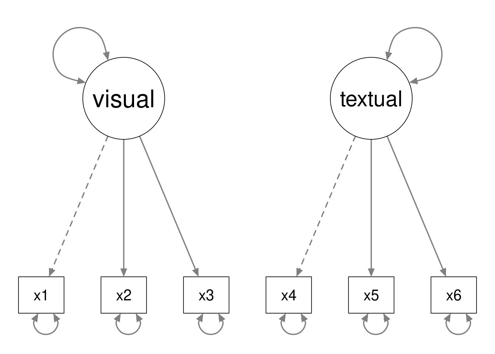
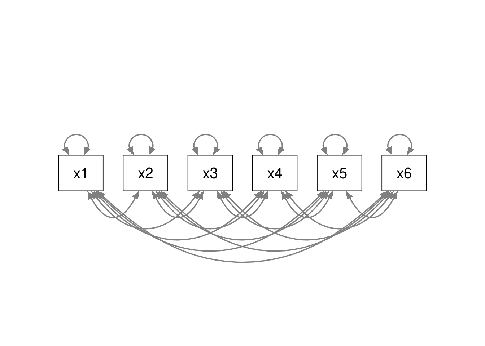
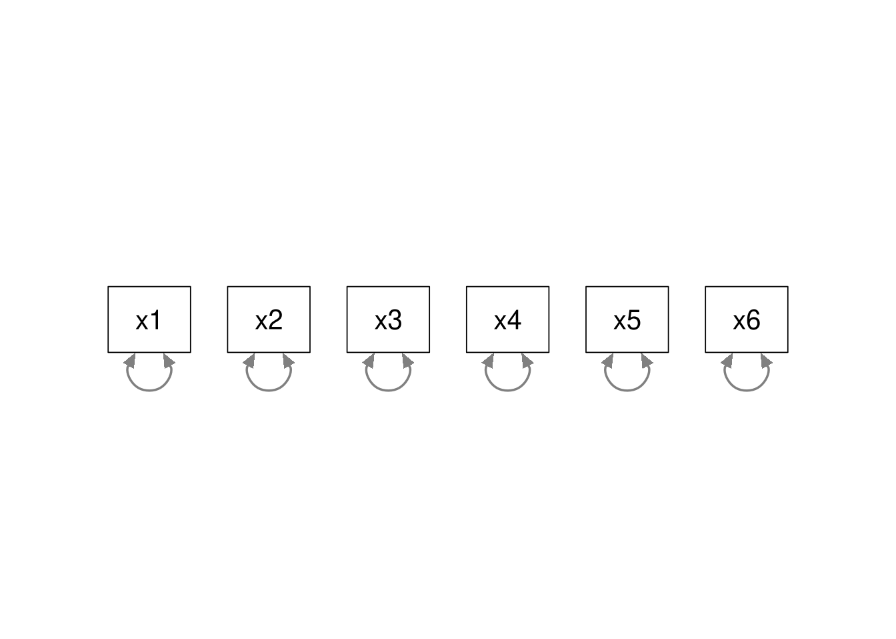

5.4 In-Class Exercises
In these exercises, we’ll extend the three-factor CFA of the Trust in Politics items that you estimated for the At-Home Exercises.
5.4.1 Basic CFA
5.4.1.1
Load the ESS data.
- The relevant data are contained in the ess_round1.rds file.
We are going to extend our existing three-factor CFA by adding the five-factor representation of the Attitudes toward Immigration items suggested by Kestilä (2006). The hypothesized factor-to-item mapping is defined below.
Trust in Institutions
trstlgl: Trust in the legal systemtrstplc: Trust in the policetrstun: Trust in the United Nationstrustep: Trust in the European Parliamenttrustprl: Trust in country’s parliament
Satisfaction with the Political Situation
stfhlth: State of health services in country nowadaysstfedu: State of education in country nowadaysstfeco: How satisfied with present state of economy in countrystfgov: How satisfied with the national governmentstfdem: How satisfied with the way democracy works in country
Trust in Politicians
pltinvt: Politicians interested in votes rather than peoples opinionspltcare: Politicians in general care what people like respondent thinktrstplt: Trust in politicians
Immigration Policy
imrcntr: Allow many/few immigrants from richer countries outside Europeeimrcnt: Allow many/few immigrants from richer countries in Europeeimpcnt: Allow many/few immigrants from poorer countries in Europeimsmetn: Allow many/few immigrants of same race/ethnic group as majorityimpcntr: Allow many/few immigrants from poorer countries outside Europeimdfetn: Allow many/few immigrants of different race/ethnic group from majority
Social Threat
imbgeco: Immigration bad or good for country’s economyimbleco: Taxes and services: immigrants take out more than they put in or lessimwbcnt: Immigrants make country worse or better place to liveimwbcrm: Immigrants make country’s crime problems worse or betterimtcjob: Immigrants take jobs away in country or create new jobsimueclt: Country’s cultural life undermined or enriched by immigrants
Refugee Policy
gvrfgap: Government should be generous judging applications for refugee statusimrsprc: Richer countries should be responsible for accepting people from poorer countriesrfgbfml: Granted refugees should be entitled to bring close family membersrfggvfn: Financial support to refugee applicants while cases consideredrfgawrk: People applying refugee status allowed to work while cases consideredrfgfrpc: Most refugee applicants not in real fear of persecution own countriesshrrfg: Country has more than its fair share of people applying refugee status
Cultural Threat
qfimchr: Qualification for immigration: christian backgroundqfimwht: Qualification for immigration: be whitepplstrd: Better for a country if almost everyone share customs and traditionsvrtrlg: Better for a country if a variety of different religions
Economic Threat
imwgdwn: Average wages/salaries generally brought down by immigrantsimhecop: Immigrants harm economic prospects of the poor more than the rich
5.4.1.2
Calcualte the following quantities for the CFA described above.
- The number of model parameters
- The pieces of available information provided by the data
- The degrees of freedom after sufficiently identifying the model
Assume:
- Simple structure with no cross-loadings
- Enough constraints to locally identify each construct
- No mean structure
Click to show answer
Our model will have 38 observed indicators and 8 latent constructs, so we get the following values.
Model Parameters
- 8 (8 - 1) / 2 = 28 latent covariances
- 8 latent variances
- 38 factor loadings
- 38 residual variances
Available Information
38 (38 + 1) / 2 = 741
Degrees of Freedom
To identify the model, we need to constrain one parameter in each constructs sub-model. We also need to constrain another parameter in the submodel for Economic Threat, because that construct has only two indicators. So, we need to constrain 9 parameters.
df = 741 - 112 + 9 = 638
5.4.1.3
Define the lavaan model syntax for the CFA described above.
- Use the fixed-factor method to set the scale.
- Enforce a simple structure; do not allow any cross-loadings.
- Covary all latent factors.
- Do not specify any mean structure.
- Save this model syntax as an object in your environment.
Click to show code
mod_trust_att <- '
## Trust in Institutions:
inst =~ trstlgl + trstplc + trstun + trstep + trstprl
## Satisfaction with the Political Situation:
sat =~ stfhlth + stfedu + stfeco + stfgov + stfdem
## Trust in Politicians:
pol =~ pltinvt + pltcare + trstplt
## Immigration Policy:
immi =~ imrcntr + eimrcnt + eimpcnt + imsmetn + impcntr + imdfetn
## Social Threat:
social =~ imbgeco + imbleco + imwbcnt + imwbcrm + imtcjob + imueclt
## Refugee Policy:
refugee =~ gvrfgap + imrsprc + rfgbfml + rfggvfn + rfgawrk + rfgfrpc + shrrfg
## Cultural Threat:
cult =~ qfimchr + qfimwht + pplstrd + vrtrlg
## Economic Threat:
econ =~ l*imwgdwn + l*imhecop
'Note: We equate the factor loadings for the Economic Threat factor because that construct is under-identified.
5.4.1.4
Estimate the CFA model you defined above, and summarize the results.
- Use the
lavaan::cfa()function to estimate the model. - Use the fixed-factor method of idenfication
- Use the default settings for the
cfa()function. - Request the model fit statistics by supplying the
fit.measures = TRUEargument tosummary(). - Request the standardized parameter estimates by supplying the
standardized = TRUEargument tosummary().
Click to show code
## Load the lavaan package:
library(lavaan)
## Estimate the CFA model:
out_trust_att <- cfa(mod_trust_att, data = ess, std.lv = TRUE)
## Summarize the fitted model:
summary(out_trust_att, fit.measures = TRUE, standardized = TRUE)## lavaan 0.6-19 ended normally after 55 iterations
##
## Estimator ML
## Optimization method NLMINB
## Number of model parameters 104
## Number of equality constraints 1
##
## Used Total
## Number of observations 11716 19690
##
## Model Test User Model:
##
## Test statistic 27329.813
## Degrees of freedom 638
## P-value (Chi-square) 0.000
##
## Model Test Baseline Model:
##
## Test statistic 201900.916
## Degrees of freedom 703
## P-value 0.000
##
## User Model versus Baseline Model:
##
## Comparative Fit Index (CFI) 0.867
## Tucker-Lewis Index (TLI) 0.854
##
## Loglikelihood and Information Criteria:
##
## Loglikelihood user model (H0) -715042.663
## Loglikelihood unrestricted model (H1) -701377.756
##
## Akaike (AIC) 1430291.326
## Bayesian (BIC) 1431050.303
## Sample-size adjusted Bayesian (SABIC) 1430722.981
##
## Root Mean Square Error of Approximation:
##
## RMSEA 0.060
## 90 Percent confidence interval - lower 0.059
## 90 Percent confidence interval - upper 0.060
## P-value H_0: RMSEA <= 0.050 0.000
## P-value H_0: RMSEA >= 0.080 0.000
##
## Standardized Root Mean Square Residual:
##
## SRMR 0.047
##
## Parameter Estimates:
##
## Standard errors Standard
## Information Expected
## Information saturated (h1) model Structured
##
## Latent Variables:
## Estimate Std.Err z-value P(>|z|) Std.lv Std.all
## inst =~
## trstlgl 1.620 0.020 79.815 0.000 1.620 0.684
## trstplc 1.221 0.019 62.808 0.000 1.221 0.565
## trstun 1.474 0.020 73.333 0.000 1.474 0.641
## trstep 1.438 0.019 75.526 0.000 1.438 0.656
## trstprl 1.824 0.018 100.336 0.000 1.824 0.808
## sat =~
## stfhlth 1.172 0.021 56.841 0.000 1.172 0.527
## stfedu 1.312 0.020 64.794 0.000 1.312 0.588
## stfeco 1.661 0.020 83.163 0.000 1.661 0.716
## stfgov 1.716 0.019 88.898 0.000 1.716 0.753
## stfdem 1.592 0.019 84.464 0.000 1.592 0.725
## pol =~
## pltinvt 0.652 0.009 70.334 0.000 0.652 0.621
## pltcare 0.669 0.009 73.562 0.000 0.669 0.643
## trstplt 1.896 0.017 110.890 0.000 1.896 0.881
## immi =~
## imrcntr 0.608 0.007 92.813 0.000 0.608 0.744
## eimrcnt 0.576 0.007 84.260 0.000 0.576 0.693
## eimpcnt 0.694 0.006 125.076 0.000 0.694 0.903
## imsmetn 0.597 0.006 101.338 0.000 0.597 0.791
## impcntr 0.706 0.006 124.789 0.000 0.706 0.902
## imdfetn 0.695 0.006 121.790 0.000 0.695 0.889
## social =~
## imbgeco 1.552 0.018 84.572 0.000 1.552 0.716
## imbleco 1.290 0.019 68.735 0.000 1.290 0.610
## imwbcnt 1.642 0.017 96.402 0.000 1.642 0.787
## imwbcrm 1.119 0.018 62.137 0.000 1.119 0.561
## imtcjob 1.174 0.018 66.689 0.000 1.174 0.595
## imueclt 1.539 0.019 79.783 0.000 1.539 0.685
## refugee =~
## gvrfgap 0.669 0.009 71.516 0.000 0.669 0.644
## imrsprc 0.560 0.010 57.975 0.000 0.560 0.541
## rfgbfml 0.671 0.011 63.653 0.000 0.671 0.586
## rfggvfn 0.540 0.010 56.399 0.000 0.540 0.529
## rfgawrk 0.395 0.010 39.036 0.000 0.395 0.381
## rfgfrpc -0.546 0.009 -58.125 0.000 -0.546 -0.543
## shrrfg -0.666 0.009 -70.298 0.000 -0.666 -0.635
## cult =~
## qfimchr 1.853 0.028 65.256 0.000 1.853 0.637
## qfimwht 1.702 0.025 67.388 0.000 1.702 0.656
## pplstrd -0.663 0.011 -61.247 0.000 -0.663 -0.602
## vrtrlg 0.467 0.010 44.859 0.000 0.467 0.456
## econ =~
## imwgdwn (l) 0.754 0.008 98.037 0.000 0.754 0.706
## imhecop (l) 0.754 0.008 98.037 0.000 0.754 0.719
##
## Covariances:
## Estimate Std.Err z-value P(>|z|) Std.lv Std.all
## inst ~~
## sat 0.746 0.006 116.573 0.000 0.746 0.746
## pol 0.877 0.005 179.842 0.000 0.877 0.877
## immi -0.243 0.010 -24.412 0.000 -0.243 -0.243
## social 0.402 0.010 41.526 0.000 0.402 0.402
## refugee -0.369 0.010 -35.468 0.000 -0.369 -0.369
## cult -0.094 0.012 -7.715 0.000 -0.094 -0.094
## econ 0.276 0.012 23.469 0.000 0.276 0.276
## sat ~~
## pol 0.723 0.007 106.311 0.000 0.723 0.723
## immi -0.110 0.010 -10.581 0.000 -0.110 -0.110
## social 0.315 0.010 30.574 0.000 0.315 0.315
## refugee -0.257 0.011 -23.161 0.000 -0.257 -0.257
## cult 0.052 0.012 4.228 0.000 0.052 0.052
## econ 0.235 0.012 19.571 0.000 0.235 0.235
## pol ~~
## immi -0.256 0.010 -25.970 0.000 -0.256 -0.256
## social 0.404 0.010 41.846 0.000 0.404 0.404
## refugee -0.358 0.010 -34.120 0.000 -0.358 -0.358
## cult -0.121 0.012 -10.005 0.000 -0.121 -0.121
## econ 0.325 0.012 28.256 0.000 0.325 0.325
## immi ~~
## social -0.595 0.007 -83.022 0.000 -0.595 -0.595
## refugee 0.639 0.007 88.761 0.000 0.639 0.639
## cult 0.557 0.009 63.875 0.000 0.557 0.557
## econ -0.453 0.010 -45.844 0.000 -0.453 -0.453
## social ~~
## refugee -0.788 0.006 -128.400 0.000 -0.788 -0.788
## cult -0.538 0.010 -55.915 0.000 -0.538 -0.538
## econ 0.575 0.010 59.830 0.000 0.575 0.575
## refugee ~~
## cult 0.507 0.010 48.402 0.000 0.507 0.507
## econ -0.498 0.011 -46.003 0.000 -0.498 -0.498
## cult ~~
## econ -0.445 0.012 -37.251 0.000 -0.445 -0.445
##
## Variances:
## Estimate Std.Err z-value P(>|z|) Std.lv Std.all
## .trstlgl 2.987 0.045 66.827 0.000 2.987 0.532
## .trstplc 3.182 0.045 71.420 0.000 3.182 0.681
## .trstun 3.121 0.045 68.893 0.000 3.121 0.590
## .trstep 2.744 0.040 68.246 0.000 2.744 0.570
## .trstprl 1.773 0.032 55.239 0.000 1.773 0.348
## .stfhlth 3.569 0.050 71.183 0.000 3.569 0.722
## .stfedu 3.250 0.047 69.144 0.000 3.250 0.654
## .stfeco 2.622 0.043 61.664 0.000 2.622 0.487
## .stfgov 2.255 0.039 58.027 0.000 2.255 0.434
## .stfdem 2.293 0.038 60.912 0.000 2.293 0.475
## .pltinvt 0.678 0.010 69.415 0.000 0.678 0.615
## .pltcare 0.633 0.009 68.463 0.000 0.633 0.586
## .trstplt 1.037 0.030 34.404 0.000 1.037 0.224
## .imrcntr 0.298 0.004 70.936 0.000 0.298 0.446
## .eimrcnt 0.359 0.005 72.369 0.000 0.359 0.519
## .eimpcnt 0.109 0.002 56.162 0.000 0.109 0.185
## .imsmetn 0.213 0.003 68.969 0.000 0.213 0.375
## .impcntr 0.115 0.002 56.455 0.000 0.115 0.187
## .imdfetn 0.128 0.002 59.199 0.000 0.128 0.210
## .imbgeco 2.292 0.036 64.371 0.000 2.292 0.487
## .imbleco 2.808 0.040 69.742 0.000 2.808 0.628
## .imwbcnt 1.662 0.029 57.651 0.000 1.662 0.381
## .imwbcrm 2.721 0.038 71.269 0.000 2.721 0.685
## .imtcjob 2.512 0.036 70.250 0.000 2.512 0.646
## .imueclt 2.673 0.040 66.319 0.000 2.673 0.530
## .gvrfgap 0.633 0.010 65.187 0.000 0.633 0.586
## .imrsprc 0.757 0.011 69.954 0.000 0.757 0.707
## .rfgbfml 0.863 0.013 68.222 0.000 0.863 0.657
## .rfggvfn 0.751 0.011 70.380 0.000 0.751 0.720
## .rfgawrk 0.923 0.012 73.870 0.000 0.923 0.855
## .rfgfrpc 0.714 0.010 69.912 0.000 0.714 0.706
## .shrrfg 0.656 0.010 65.716 0.000 0.656 0.597
## .qfimchr 5.027 0.086 58.121 0.000 5.027 0.594
## .qfimwht 3.844 0.068 56.187 0.000 3.844 0.570
## .pplstrd 0.772 0.013 61.259 0.000 0.772 0.637
## .vrtrlg 0.829 0.012 69.599 0.000 0.829 0.792
## .imwgdwn 0.571 0.011 52.914 0.000 0.571 0.501
## .imhecop 0.531 0.010 50.907 0.000 0.531 0.483
## inst 1.000 1.000 1.000
## sat 1.000 1.000 1.000
## pol 1.000 1.000 1.000
## immi 1.000 1.000 1.000
## social 1.000 1.000 1.000
## refugee 1.000 1.000 1.000
## cult 1.000 1.000 1.000
## econ 1.000 1.000 1.0005.4.1.5
Evaluate the model you estimated in 5.4.1.4. Do you think this measurement model is a reasonable representation of the data?
Click for explanation
Model Fit
The model fit is ambiguous \((\chi^2 = 27329.81,\) \(\textit{df} = 638,\) \(p < 0.001,\) \(\textrm{RMSEA} = 0.06,\) \(\textrm{CFI} = 0.867,\) \(\textrm{SRMR} = 0.047)\).
- The SRMR and RMSEA look good.
- The CFI indicates poor fit.
- The \(\chi^2\) is highly significant, but we don’t care.
Two out of our three approximate fit indices suggest a good model, but we need to be cautious. The RMSEA can be overly optimistic for large models with many degrees of freedom. So, we have a bit of a tie:
- One good-looking index (SRMR)
- One bad-looking index (CFI)
- One good-looking, but not entirely trustworthy, index (RMSEA)
Parameter Estimates
The standardized factor loadings and residual variances seem fine.
est <- lavInspect(out_trust_att, "standardized")
cbind(est$lambda, Resid_Var = diag(est$theta)) |>
round(3) |>
Matrix::Matrix(sparse = TRUE)## 38 x 9 sparse Matrix of class "dgCMatrix"
## inst sat pol immi social refugee cult econ Resid_Var
## trstlgl 0.684 . . . . . . . 0.532
## trstplc 0.565 . . . . . . . 0.681
## trstun 0.641 . . . . . . . 0.590
## trstep 0.656 . . . . . . . 0.570
## trstprl 0.808 . . . . . . . 0.348
## stfhlth . 0.527 . . . . . . 0.722
## stfedu . 0.588 . . . . . . 0.654
## stfeco . 0.716 . . . . . . 0.487
## stfgov . 0.753 . . . . . . 0.434
## stfdem . 0.725 . . . . . . 0.475
## pltinvt . . 0.621 . . . . . 0.615
## pltcare . . 0.643 . . . . . 0.586
## trstplt . . 0.881 . . . . . 0.224
## imrcntr . . . 0.744 . . . . 0.446
## eimrcnt . . . 0.693 . . . . 0.519
## eimpcnt . . . 0.903 . . . . 0.185
## imsmetn . . . 0.791 . . . . 0.375
## impcntr . . . 0.902 . . . . 0.187
## imdfetn . . . 0.889 . . . . 0.210
## imbgeco . . . . 0.716 . . . 0.487
## imbleco . . . . 0.610 . . . 0.628
## imwbcnt . . . . 0.787 . . . 0.381
## imwbcrm . . . . 0.561 . . . 0.685
## imtcjob . . . . 0.595 . . . 0.646
## imueclt . . . . 0.685 . . . 0.530
## gvrfgap . . . . . 0.644 . . 0.586
## imrsprc . . . . . 0.541 . . 0.707
## rfgbfml . . . . . 0.586 . . 0.657
## rfggvfn . . . . . 0.529 . . 0.720
## rfgawrk . . . . . 0.381 . . 0.855
## rfgfrpc . . . . . -0.543 . . 0.706
## shrrfg . . . . . -0.635 . . 0.597
## qfimchr . . . . . . 0.637 . 0.594
## qfimwht . . . . . . 0.656 . 0.570
## pplstrd . . . . . . -0.602 . 0.637
## vrtrlg . . . . . . 0.456 . 0.792
## imwgdwn . . . . . . . 0.706 0.501
## imhecop . . . . . . . 0.719 0.483The latent correlations looks sensible.
## inst sat pol immi social refuge cult econ
## inst 1.000
## sat 0.746 1.000
## pol 0.877 0.723 1.000
## immi -0.243 -0.110 -0.256 1.000
## social 0.402 0.315 0.404 -0.595 1.000
## refugee -0.369 -0.257 -0.358 0.639 -0.788 1.000
## cult -0.094 0.052 -0.121 0.557 -0.538 0.507 1.000
## econ 0.276 0.235 0.325 -0.453 0.575 -0.498 -0.445 1.000When we fail to support the hypothesized measurement model, the confirmatory phase of our analysis is over. At this point, we’ve essentially rejected our hypothesized measurement structure, and that’s the conclusion of our analysis. We don’t have to throw up our hands in despair, however. We can still contribute something useful by modifying the theoretical measurement model through an exploratory, data-driven, post-hoc analysis.
We’ll give that a shot below.
5.4.2 Post-Hoc Model Modifications
The following code will compute the modification indices for the three-factor model of Trust in Politics from the At-Home Exercises.
## lhs op rhs mi epc sepc.lv sepc.all sepc.nox
## 59 trstlgl ~~ trstplc 2753.812 1.537 1.537 0.487 0.487
## 134 pltinvt ~~ pltcare 2621.216 0.325 0.325 0.478 0.478
## 40 institutions =~ trstplt 2084.710 4.552 4.552 2.085 2.085
## 109 stfhlth ~~ stfedu 1455.243 1.221 1.221 0.346 0.346
## 53 politicians =~ trstprl 1027.071 1.751 1.751 0.772 0.772
## 82 trstun ~~ trstep 996.711 0.890 0.890 0.299 0.299
## 37 institutions =~ stfdem 729.215 0.810 0.810 0.365 0.365
## 108 trstprl ~~ trstplt 486.325 0.440 0.440 0.334 0.334
## 136 pltcare ~~ trstplt 483.441 -0.332 -0.332 -0.410 -0.410
## 38 institutions =~ pltinvt 450.035 -0.612 -0.612 -0.581 -0.581
## 50 politicians =~ trstplc 391.601 -1.039 -1.039 -0.475 -0.475
## 58 politicians =~ stfdem 376.384 0.545 0.545 0.246 0.246
## 49 politicians =~ trstlgl 373.158 -1.074 -1.074 -0.451 -0.451
## 73 trstplc ~~ trstprl 355.687 -0.480 -0.480 -0.200 -0.200
## 66 trstlgl ~~ stfgov 342.140 -0.481 -0.481 -0.183 -0.183
## 39 institutions =~ pltcare 341.059 -0.540 -0.540 -0.514 -0.514
## 135 pltinvt ~~ trstplt 335.389 -0.269 -0.269 -0.327 -0.327
## 100 trstep ~~ trstplt 334.042 0.383 0.383 0.232 0.232
## 122 stfeco ~~ stfgov 289.112 0.510 0.510 0.208 0.208
## 83 trstun ~~ trstprl 244.948 -0.416 -0.416 -0.174 -0.174
## 75 trstplc ~~ stfedu 234.905 0.449 0.449 0.136 0.136
## 35 institutions =~ stfeco 192.059 -0.436 -0.436 -0.187 -0.187
## 55 politicians =~ stfedu 187.535 -0.405 -0.405 -0.180 -0.180
## 123 stfeco ~~ stfdem 187.119 -0.395 -0.395 -0.160 -0.160
## 130 stfgov ~~ trstplt 184.809 0.270 0.270 0.182 0.182
## 54 politicians =~ stfhlth 184.734 -0.411 -0.411 -0.183 -0.183
## 45 satisfaction =~ trstprl 181.843 0.395 0.395 0.174 0.174
## 48 satisfaction =~ trstplt 169.626 0.461 0.461 0.211 0.211
## 72 trstplc ~~ trstep 169.376 -0.360 -0.360 -0.120 -0.120
## 111 stfhlth ~~ stfgov 166.723 -0.384 -0.384 -0.133 -0.133
## 117 stfedu ~~ stfgov 162.149 -0.372 -0.372 -0.135 -0.135
## 102 trstprl ~~ stfedu 155.333 -0.302 -0.302 -0.123 -0.123
## 67 trstlgl ~~ stfdem 151.853 0.316 0.316 0.119 0.119
## 95 trstep ~~ stfeco 150.583 -0.317 -0.317 -0.117 -0.117
## 33 institutions =~ stfhlth 129.599 -0.366 -0.366 -0.162 -0.162
## 44 satisfaction =~ trstep 110.076 -0.313 -0.313 -0.141 -0.141
## 61 trstlgl ~~ trstep 109.492 -0.294 -0.294 -0.101 -0.101
## 80 trstplc ~~ pltcare 105.424 -0.135 -0.135 -0.092 -0.092
## 46 satisfaction =~ pltinvt 96.142 -0.140 -0.140 -0.133 -0.133
## 70 trstlgl ~~ trstplt 93.869 -0.216 -0.216 -0.125 -0.125
## 99 trstep ~~ pltcare 90.438 -0.118 -0.118 -0.087 -0.087
## 98 trstep ~~ pltinvt 87.922 -0.119 -0.119 -0.085 -0.085
## 104 trstprl ~~ stfgov 86.286 0.202 0.202 0.101 0.101
## 81 trstplc ~~ trstplt 79.026 -0.193 -0.193 -0.108 -0.108
## 34 institutions =~ stfedu 78.398 -0.279 -0.279 -0.124 -0.124
## 56 politicians =~ stfeco 72.665 -0.251 -0.251 -0.108 -0.108
## 79 trstplc ~~ pltinvt 72.446 -0.114 -0.114 -0.076 -0.076
## 64 trstlgl ~~ stfedu 69.353 0.243 0.243 0.076 0.076
## 57 politicians =~ stfgov 66.831 0.238 0.238 0.104 0.104
## 78 trstplc ~~ stfdem 65.909 0.208 0.208 0.076 0.076
## 105 trstprl ~~ stfdem 64.747 0.172 0.172 0.085 0.085
## 84 trstun ~~ stfhlth 63.625 -0.244 -0.244 -0.071 -0.071
## 51 politicians =~ trstun 59.376 -0.422 -0.422 -0.181 -0.181
## 77 trstplc ~~ stfgov 45.505 -0.175 -0.175 -0.065 -0.065
## 112 stfhlth ~~ stfdem 44.248 -0.193 -0.193 -0.066 -0.066
## 68 trstlgl ~~ pltinvt 43.667 -0.088 -0.088 -0.061 -0.061
## 118 stfedu ~~ stfdem 43.348 -0.188 -0.188 -0.068 -0.068
## 92 trstep ~~ trstprl 41.997 -0.163 -0.163 -0.073 -0.073
## 43 satisfaction =~ trstun 41.642 -0.204 -0.204 -0.088 -0.088
## 120 stfedu ~~ pltcare 40.124 -0.085 -0.085 -0.057 -0.057
## 116 stfedu ~~ stfeco 40.032 0.190 0.190 0.064 0.064
## 76 trstplc ~~ stfeco 39.121 -0.171 -0.171 -0.058 -0.058
## 121 stfedu ~~ trstplt 37.208 -0.133 -0.133 -0.073 -0.073
## 47 satisfaction =~ pltcare 34.519 -0.084 -0.084 -0.080 -0.080
## 113 stfhlth ~~ pltinvt 33.159 -0.081 -0.081 -0.051 -0.051
## 52 politicians =~ trstep 32.712 0.297 0.297 0.134 0.134
## 69 trstlgl ~~ pltcare 32.141 -0.075 -0.075 -0.052 -0.052
## 71 trstplc ~~ trstun 31.756 0.166 0.166 0.051 0.051
## 63 trstlgl ~~ stfhlth 28.271 0.161 0.161 0.048 0.048
## 91 trstun ~~ trstplt 26.254 -0.114 -0.114 -0.064 -0.064
## 110 stfhlth ~~ stfeco 24.378 0.152 0.152 0.048 0.048
## 119 stfedu ~~ pltinvt 23.704 -0.066 -0.066 -0.043 -0.043
## 114 stfhlth ~~ pltcare 22.339 -0.066 -0.066 -0.042 -0.042
## 62 trstlgl ~~ trstprl 21.168 -0.124 -0.124 -0.053 -0.053
## 132 stfdem ~~ pltcare 19.063 0.051 0.051 0.042 0.042
## 88 trstun ~~ stfdem 15.864 0.103 0.103 0.038 0.038
## 101 trstprl ~~ stfhlth 15.560 -0.099 -0.099 -0.039 -0.039
## 74 trstplc ~~ stfhlth 15.552 0.120 0.120 0.035 0.035
## 133 stfdem ~~ trstplt 13.537 -0.072 -0.072 -0.048 -0.048
## 42 satisfaction =~ trstplc 12.801 0.110 0.110 0.050 0.050
## 115 stfhlth ~~ trstplt 11.862 -0.078 -0.078 -0.041 -0.041
## 86 trstun ~~ stfeco 11.563 -0.094 -0.094 -0.032 -0.032
## 41 satisfaction =~ trstlgl 11.161 -0.106 -0.106 -0.045 -0.045
## 125 stfeco ~~ pltcare 10.877 0.041 0.041 0.031 0.031
## 131 stfdem ~~ pltinvt 7.474 0.033 0.033 0.026 0.026
## 87 trstun ~~ stfgov 6.905 -0.069 -0.069 -0.026 -0.026
## 107 trstprl ~~ pltcare 6.349 0.028 0.028 0.026 0.026
## 97 trstep ~~ stfdem 6.022 -0.060 -0.060 -0.024 -0.024
## 103 trstprl ~~ stfeco 4.819 0.050 0.050 0.023 0.023
## 65 trstlgl ~~ stfeco 4.576 -0.058 -0.058 -0.020 -0.020
## 60 trstlgl ~~ trstun 3.665 -0.057 -0.057 -0.018 -0.018
## 129 stfgov ~~ pltcare 3.590 -0.023 -0.023 -0.018 -0.018
## 128 stfgov ~~ pltinvt 3.449 -0.022 -0.022 -0.018 -0.018
## 127 stfgov ~~ stfdem 2.218 -0.043 -0.043 -0.019 -0.019
## 85 trstun ~~ stfedu 2.063 0.042 0.042 0.013 0.013
## 90 trstun ~~ pltcare 1.846 -0.018 -0.018 -0.012 -0.012
## 93 trstep ~~ stfhlth 1.426 0.034 0.034 0.011 0.011
## 36 institutions =~ stfgov 0.856 0.029 0.029 0.013 0.013
## 89 trstun ~~ pltinvt 0.572 0.010 0.010 0.007 0.007
## 106 trstprl ~~ pltinvt 0.504 -0.008 -0.008 -0.007 -0.007
## 96 trstep ~~ stfgov 0.486 0.017 0.017 0.007 0.007
## 124 stfeco ~~ pltinvt 0.384 0.008 0.008 0.006 0.006
## 94 trstep ~~ stfedu 0.196 -0.012 -0.012 -0.004 -0.004
## 126 stfeco ~~ trstplt 0.001 -0.001 -0.001 0.000 0.000As you can see, the modificationInices() function will usually produce a lot of output, but we don’t need all that
stuff. We only care about the largest modification indices, so we only need to print the first few rows.
## lhs op rhs mi epc sepc.lv sepc.all sepc.nox
## 59 trstlgl ~~ trstplc 2753.812 1.537 1.537 0.487 0.487
## 134 pltinvt ~~ pltcare 2621.216 0.325 0.325 0.478 0.478
## 40 institutions =~ trstplt 2084.710 4.552 4.552 2.085 2.085
## 109 stfhlth ~~ stfedu 1455.243 1.221 1.221 0.346 0.346
## 53 politicians =~ trstprl 1027.071 1.751 1.751 0.772 0.772
## 82 trstun ~~ trstep 996.711 0.890 0.890 0.299 0.299Alternatively, we can request only those modification indices that exceed some minimum threshold. We can use 10% of the model \(\chi^2\) as a useful rule-of-thumb.
thresh <- 0.1 * fitMeasures(out_3f, "chisq")
modificationIndices(out_3f, sort. = TRUE, minimum.value = thresh)## lhs op rhs mi epc sepc.lv sepc.all sepc.nox
## 59 trstlgl ~~ trstplc 2753.812 1.537 1.537 0.487 0.487
## 134 pltinvt ~~ pltcare 2621.216 0.325 0.325 0.478 0.478
## 40 institutions =~ trstplt 2084.710 4.552 4.552 2.085 2.085
## 109 stfhlth ~~ stfedu 1455.243 1.221 1.221 0.346 0.3465.4.2.1
Calculate the modification indices for the model you estimated in 5.4.1.4.
- Which estimate would most improve the model fit?
- How much would freeing the above estimate decrease the model \(\chi^2\).
- Can you see an obvious reason why this parameter estimate would improve the model?
- If so, explain the reason.
Click to show code
thresh <- 0.1 * fitMeasures(out_trust_att, "chisq")
modificationIndices(out_trust_att, sort. = TRUE, minimum.value = thresh)## lhs op rhs mi epc sepc.lv sepc.all sepc.nox
## 783 imrcntr ~~ eimrcnt 5114.364 0.232 0.232 0.711 0.711Click for explanation
Freeing the residual covariances between
imrcntrandeimrcntwould produce the largest improvement in model fit.After freeing this covariance, we’d expect the model \(\chi^2\) to decrease by 5114.36.
Yes. Both of these items ask about attitudes towards immigrants from rich countries. None of the other items explicitly address immigration from rich countries.
5.4.2.2
Estimate a modified version of the CFA from 5.4.1.4.
- Modify the model to estimate the parameter associated with the largest modification index that you found above.
Click to show code
## Add the residual covariance to the model syntax:
mod_trust_att2 <- paste(mod_trust_att, "imrcntr ~~ eimrcnt", sep = "\n")
## Estimate and summarize the modified model:
out_trust_att2 <- cfa(mod_trust_att2, data = ess, std.lv = TRUE)
summary(out_trust_att2, fit.measures = TRUE, standardized = TRUE)## lavaan 0.6-19 ended normally after 52 iterations
##
## Estimator ML
## Optimization method NLMINB
## Number of model parameters 105
## Number of equality constraints 1
##
## Used Total
## Number of observations 11716 19690
##
## Model Test User Model:
##
## Test statistic 21317.825
## Degrees of freedom 637
## P-value (Chi-square) 0.000
##
## Model Test Baseline Model:
##
## Test statistic 201900.916
## Degrees of freedom 703
## P-value 0.000
##
## User Model versus Baseline Model:
##
## Comparative Fit Index (CFI) 0.897
## Tucker-Lewis Index (TLI) 0.887
##
## Loglikelihood and Information Criteria:
##
## Loglikelihood user model (H0) -712036.669
## Loglikelihood unrestricted model (H1) -701377.756
##
## Akaike (AIC) 1424281.337
## Bayesian (BIC) 1425047.683
## Sample-size adjusted Bayesian (SABIC) 1424717.183
##
## Root Mean Square Error of Approximation:
##
## RMSEA 0.053
## 90 Percent confidence interval - lower 0.052
## 90 Percent confidence interval - upper 0.053
## P-value H_0: RMSEA <= 0.050 0.000
## P-value H_0: RMSEA >= 0.080 0.000
##
## Standardized Root Mean Square Residual:
##
## SRMR 0.046
##
## Parameter Estimates:
##
## Standard errors Standard
## Information Expected
## Information saturated (h1) model Structured
##
## Latent Variables:
## Estimate Std.Err z-value P(>|z|) Std.lv Std.all
## inst =~
## trstlgl 1.620 0.020 79.813 0.000 1.620 0.684
## trstplc 1.222 0.019 62.814 0.000 1.222 0.565
## trstun 1.474 0.020 73.333 0.000 1.474 0.641
## trstep 1.438 0.019 75.527 0.000 1.438 0.656
## trstprl 1.824 0.018 100.329 0.000 1.824 0.808
## sat =~
## stfhlth 1.172 0.021 56.853 0.000 1.172 0.527
## stfedu 1.312 0.020 64.800 0.000 1.312 0.588
## stfeco 1.661 0.020 83.167 0.000 1.661 0.716
## stfgov 1.716 0.019 88.890 0.000 1.716 0.753
## stfdem 1.592 0.019 84.465 0.000 1.592 0.724
## pol =~
## pltinvt 0.652 0.009 70.338 0.000 0.652 0.621
## pltcare 0.669 0.009 73.560 0.000 0.669 0.643
## trstplt 1.896 0.017 110.891 0.000 1.896 0.881
## immi =~
## imrcntr 0.582 0.007 87.515 0.000 0.582 0.713
## eimrcnt 0.544 0.007 78.074 0.000 0.544 0.654
## eimpcnt 0.699 0.006 126.441 0.000 0.699 0.909
## imsmetn 0.589 0.006 99.365 0.000 0.589 0.780
## impcntr 0.714 0.006 127.196 0.000 0.714 0.912
## imdfetn 0.696 0.006 122.143 0.000 0.696 0.890
## social =~
## imbgeco 1.552 0.018 84.530 0.000 1.552 0.716
## imbleco 1.290 0.019 68.750 0.000 1.290 0.610
## imwbcnt 1.643 0.017 96.413 0.000 1.643 0.787
## imwbcrm 1.120 0.018 62.163 0.000 1.120 0.562
## imtcjob 1.174 0.018 66.686 0.000 1.174 0.595
## imueclt 1.539 0.019 79.775 0.000 1.539 0.685
## refugee =~
## gvrfgap 0.669 0.009 71.574 0.000 0.669 0.644
## imrsprc 0.562 0.010 58.148 0.000 0.562 0.543
## rfgbfml 0.670 0.011 63.626 0.000 0.670 0.585
## rfggvfn 0.539 0.010 56.388 0.000 0.539 0.529
## rfgawrk 0.395 0.010 39.005 0.000 0.395 0.380
## rfgfrpc -0.546 0.009 -58.183 0.000 -0.546 -0.543
## shrrfg -0.665 0.009 -70.227 0.000 -0.665 -0.634
## cult =~
## qfimchr 1.853 0.028 65.285 0.000 1.853 0.637
## qfimwht 1.703 0.025 67.457 0.000 1.703 0.656
## pplstrd -0.662 0.011 -61.206 0.000 -0.662 -0.602
## vrtrlg 0.467 0.010 44.851 0.000 0.467 0.456
## econ =~
## imwgdwn (l) 0.754 0.008 98.038 0.000 0.754 0.706
## imhecop (l) 0.754 0.008 98.038 0.000 0.754 0.719
##
## Covariances:
## Estimate Std.Err z-value P(>|z|) Std.lv Std.all
## .imrcntr ~~
## .eimrcnt 0.234 0.004 55.365 0.000 0.234 0.650
## inst ~~
## sat 0.746 0.006 116.570 0.000 0.746 0.746
## pol 0.877 0.005 179.839 0.000 0.877 0.877
## immi -0.239 0.010 -24.025 0.000 -0.239 -0.239
## social 0.402 0.010 41.526 0.000 0.402 0.402
## refugee -0.369 0.010 -35.463 0.000 -0.369 -0.369
## cult -0.094 0.012 -7.708 0.000 -0.094 -0.094
## econ 0.276 0.012 23.469 0.000 0.276 0.276
## sat ~~
## pol 0.723 0.007 106.308 0.000 0.723 0.723
## immi -0.106 0.010 -10.162 0.000 -0.106 -0.106
## social 0.315 0.010 30.576 0.000 0.315 0.315
## refugee -0.257 0.011 -23.157 0.000 -0.257 -0.257
## cult 0.052 0.012 4.234 0.000 0.052 0.052
## econ 0.235 0.012 19.571 0.000 0.235 0.235
## pol ~~
## immi -0.255 0.010 -25.776 0.000 -0.255 -0.255
## social 0.404 0.010 41.848 0.000 0.404 0.404
## refugee -0.358 0.010 -34.116 0.000 -0.358 -0.358
## cult -0.121 0.012 -9.995 0.000 -0.121 -0.121
## econ 0.325 0.012 28.256 0.000 0.325 0.325
## immi ~~
## social -0.597 0.007 -83.319 0.000 -0.597 -0.597
## refugee 0.644 0.007 90.122 0.000 0.644 0.644
## cult 0.560 0.009 64.356 0.000 0.560 0.560
## econ -0.453 0.010 -45.885 0.000 -0.453 -0.453
## social ~~
## refugee -0.788 0.006 -128.375 0.000 -0.788 -0.788
## cult -0.538 0.010 -55.878 0.000 -0.538 -0.538
## econ 0.575 0.010 59.829 0.000 0.575 0.575
## refugee ~~
## cult 0.507 0.010 48.359 0.000 0.507 0.507
## econ -0.498 0.011 -45.991 0.000 -0.498 -0.498
## cult ~~
## econ -0.445 0.012 -37.240 0.000 -0.445 -0.445
##
## Variances:
## Estimate Std.Err z-value P(>|z|) Std.lv Std.all
## .trstlgl 2.987 0.045 66.826 0.000 2.987 0.532
## .trstplc 3.181 0.045 71.418 0.000 3.181 0.681
## .trstun 3.121 0.045 68.891 0.000 3.121 0.590
## .trstep 2.744 0.040 68.244 0.000 2.744 0.570
## .trstprl 1.773 0.032 55.240 0.000 1.773 0.348
## .stfhlth 3.568 0.050 71.182 0.000 3.568 0.722
## .stfedu 3.250 0.047 69.145 0.000 3.250 0.654
## .stfeco 2.622 0.043 61.667 0.000 2.622 0.487
## .stfgov 2.255 0.039 58.039 0.000 2.255 0.434
## .stfdem 2.293 0.038 60.917 0.000 2.293 0.475
## .pltinvt 0.678 0.010 69.415 0.000 0.678 0.615
## .pltcare 0.633 0.009 68.465 0.000 0.633 0.586
## .trstplt 1.037 0.030 34.407 0.000 1.037 0.224
## .imrcntr 0.328 0.005 71.799 0.000 0.328 0.491
## .eimrcnt 0.395 0.005 73.059 0.000 0.395 0.572
## .eimpcnt 0.103 0.002 54.129 0.000 0.103 0.174
## .imsmetn 0.223 0.003 69.398 0.000 0.223 0.391
## .impcntr 0.103 0.002 53.211 0.000 0.103 0.168
## .imdfetn 0.127 0.002 58.548 0.000 0.127 0.207
## .imbgeco 2.294 0.036 64.387 0.000 2.294 0.488
## .imbleco 2.807 0.040 69.737 0.000 2.807 0.628
## .imwbcnt 1.661 0.029 57.638 0.000 1.661 0.381
## .imwbcrm 2.720 0.038 71.262 0.000 2.720 0.685
## .imtcjob 2.512 0.036 70.249 0.000 2.512 0.646
## .imueclt 2.673 0.040 66.320 0.000 2.673 0.530
## .gvrfgap 0.632 0.010 65.209 0.000 0.632 0.585
## .imrsprc 0.756 0.011 69.934 0.000 0.756 0.706
## .rfgbfml 0.863 0.013 68.265 0.000 0.863 0.658
## .rfggvfn 0.751 0.011 70.408 0.000 0.751 0.721
## .rfgawrk 0.924 0.013 73.885 0.000 0.924 0.855
## .rfgfrpc 0.714 0.010 69.924 0.000 0.714 0.705
## .shrrfg 0.657 0.010 65.790 0.000 0.657 0.598
## .qfimchr 5.025 0.086 58.121 0.000 5.025 0.594
## .qfimwht 3.840 0.068 56.148 0.000 3.840 0.570
## .pplstrd 0.772 0.013 61.307 0.000 0.772 0.638
## .vrtrlg 0.829 0.012 69.609 0.000 0.829 0.792
## .imwgdwn 0.571 0.011 52.917 0.000 0.571 0.501
## .imhecop 0.531 0.010 50.901 0.000 0.531 0.483
## inst 1.000 1.000 1.000
## sat 1.000 1.000 1.000
## pol 1.000 1.000 1.000
## immi 1.000 1.000 1.000
## social 1.000 1.000 1.000
## refugee 1.000 1.000 1.000
## cult 1.000 1.000 1.000
## econ 1.000 1.000 1.0005.4.2.3
Calculate the modification indices for the model you estimated in 5.4.2.2.
- Which estimate would most improve the model fit?
- How much would freeing the above estimate decrease the model \(\chi^2\).
- Can you see an obvious reason why this parameter estimate would improve the model?
- If so, explain the reason.
Click to show code
thresh <- 0.1 * fitMeasures(out_trust_att2, "chisq")
modificationIndices(out_trust_att2, sort. = TRUE, thresh)## lhs op rhs mi epc sepc.lv sepc.all sepc.nox
## 381 trstlgl ~~ trstplc 2132.874 1.484 1.484 0.481 0.481
## 122 inst =~ trstplt 1914.240 4.422 4.422 2.054 2.054
## 706 pltinvt ~~ pltcare 1804.136 0.293 0.293 0.448 0.448
## 1068 qfimchr ~~ qfimwht 1699.096 2.751 2.751 0.626 0.626
## 556 stfhlth ~~ stfedu 1024.726 1.114 1.114 0.327 0.327
## 185 pol =~ trstprl 922.322 1.916 1.916 0.848 0.848
## 808 eimrcnt ~~ imsmetn 808.281 0.062 0.062 0.211 0.211
## 454 trstun ~~ trstep 763.276 0.854 0.854 0.292 0.292
## 119 inst =~ stfdem 738.363 0.923 0.923 0.420 0.420
## 831 eimpcnt ~~ impcntr 733.301 0.050 0.050 0.487 0.487
## 276 social =~ pplstrd 681.237 0.361 0.361 0.328 0.328
## 305 refugee =~ qfimchr 640.152 -0.945 -0.945 -0.325 -0.325
## 852 imsmetn ~~ impcntr 623.242 -0.048 -0.048 -0.314 -0.314
## 274 social =~ qfimchr 601.338 0.908 0.908 0.312 0.312
## 809 eimrcnt ~~ impcntr 561.392 -0.041 -0.041 -0.201 -0.201
## 307 refugee =~ pplstrd 551.570 -0.328 -0.328 -0.298 -0.298
## 335 cult =~ imueclt 492.609 -0.563 -0.563 -0.251 -0.251
## 530 trstprl ~~ trstplt 483.494 0.477 0.477 0.352 0.352
## 190 pol =~ stfdem 471.594 0.695 0.695 0.316 0.316
## 120 inst =~ pltinvt 447.393 -0.692 -0.692 -0.658 -0.658
## 121 inst =~ pltcare 388.927 -0.652 -0.652 -0.627 -0.627
## 277 social =~ vrtrlg 376.746 -0.249 -0.249 -0.243 -0.243
## 733 pltcare ~~ trstplt 374.483 -0.310 -0.310 -0.382 -0.382
## 1073 qfimwht ~~ pplstrd 373.300 0.472 0.472 0.274 0.274
## 323 cult =~ trstplt 367.017 0.401 0.401 0.186 0.186
## 182 pol =~ trstplc 353.381 -1.138 -1.138 -0.527 -0.527
## 308 refugee =~ vrtrlg 344.774 0.240 0.240 0.234 0.234
## 832 eimpcnt ~~ imdfetn 341.565 -0.034 -0.034 -0.296 -0.296
## 497 trstep ~~ trstplt 323.828 0.413 0.413 0.245 0.245
## 912 imbgeco ~~ imbleco 321.602 0.495 0.495 0.195 0.195
## 342 cult =~ shrrfg 315.886 -0.226 -0.226 -0.215 -0.215
## 181 pol =~ trstlgl 307.804 -1.130 -1.130 -0.477 -0.477
## 420 trstplc ~~ trstprl 306.283 -0.490 -0.490 -0.206 -0.206
## 320 cult =~ stfdem 304.130 -0.327 -0.327 -0.149 -0.149
## 376 econ =~ shrrfg 301.077 0.225 0.225 0.214 0.214
## 357 econ =~ trstplt 298.998 -0.401 -0.401 -0.186 -0.186
## 379 econ =~ pplstrd 294.141 0.238 0.238 0.217 0.217
## 1074 qfimwht ~~ vrtrlg 288.894 -0.364 -0.364 -0.204 -0.204
## 368 econ =~ imtcjob 272.125 0.422 0.422 0.214 0.214
## 228 immi =~ trstplt 264.841 0.314 0.314 0.146 0.146
## 1077 pplstrd ~~ vrtrlg 255.723 -0.145 -0.145 -0.181 -0.181
## 155 sat =~ trstplt 253.842 0.613 0.613 0.285 0.285
## 329 cult =~ imdfetn 251.030 0.092 0.092 0.118 0.118
## 322 cult =~ pltcare 250.853 -0.148 -0.148 -0.142 -0.142
## 225 immi =~ stfdem 247.389 -0.264 -0.264 -0.120 -0.120
## 273 social =~ shrrfg 246.101 0.320 0.320 0.305 0.305
## 142 inst =~ qfimchr 237.410 0.411 0.411 0.141 0.141
## 388 trstlgl ~~ stfgov 233.159 -0.438 -0.438 -0.169 -0.169
## 933 imbleco ~~ imueclt 232.774 -0.446 -0.446 -0.163 -0.163
## 375 econ =~ rfgfrpc 223.006 0.191 0.191 0.190 0.190
## 1069 qfimchr ~~ pplstrd 221.850 0.401 0.401 0.204 0.204
## 210 pol =~ qfimchr 211.942 0.391 0.391 0.134 0.134
## 707 pltinvt ~~ trstplt 208.497 -0.224 -0.224 -0.268 -0.268
## 292 refugee =~ trstplt 204.712 0.315 0.315 0.146 0.146
## 275 social =~ qfimwht 203.784 0.476 0.476 0.183 0.183
## 260 social =~ trstplt 196.953 -0.310 -0.310 -0.144 -0.144
## 422 trstplc ~~ stfedu 196.283 0.448 0.448 0.139 0.139
## 1008 gvrfgap ~~ rfgawrk 192.732 0.109 0.109 0.143 0.143
## 242 immi =~ qfimchr 191.212 -0.506 -0.506 -0.174 -0.174
## 356 econ =~ pltcare 190.759 0.142 0.142 0.137 0.137
## 786 imrcntr ~~ impcntr 190.503 0.022 0.022 0.120 0.120
## 257 social =~ stfdem 188.115 0.256 0.256 0.117 0.117
## 187 pol =~ stfedu 185.421 -0.459 -0.459 -0.206 -0.206
## 619 stfeco ~~ stfgov 184.673 0.446 0.446 0.183 0.183
## 166 sat =~ imtcjob 178.186 0.241 0.241 0.122 0.122
## 455 trstun ~~ trstprl 177.334 -0.388 -0.388 -0.165 -0.165
## 227 immi =~ pltcare 176.359 -0.114 -0.114 -0.109 -0.109
## 175 sat =~ qfimchr 175.471 0.357 0.357 0.123 0.123
## 336 cult =~ gvrfgap 174.985 -0.166 -0.166 -0.160 -0.160
## 377 econ =~ qfimchr 169.924 0.482 0.482 0.166 0.166
## 212 pol =~ pplstrd 169.033 0.132 0.132 0.120 0.120
## 784 imrcntr ~~ eimpcnt 168.496 -0.020 -0.020 -0.111 -0.111
## 117 inst =~ stfeco 160.170 -0.454 -0.454 -0.196 -0.196
## 331 cult =~ imbleco 153.384 0.311 0.311 0.147 0.147
## 370 econ =~ gvrfgap 152.089 0.158 0.158 0.152 0.152
## 354 econ =~ stfdem 151.046 0.246 0.246 0.112 0.112
## 144 inst =~ pplstrd 148.322 0.123 0.123 0.112 0.112
## 652 stfgov ~~ trstplt 147.539 0.266 0.266 0.174 0.174
## 259 social =~ pltcare 147.411 0.118 0.118 0.114 0.114
## 853 imsmetn ~~ imdfetn 142.488 0.023 0.023 0.140 0.140
## 186 pol =~ stfhlth 142.338 -0.410 -0.410 -0.184 -0.184
## 949 imwbcnt ~~ imueclt 139.704 0.310 0.310 0.147 0.147
## 289 refugee =~ stfdem 137.856 -0.220 -0.220 -0.100 -0.100
## 222 immi =~ stfedu 137.835 0.216 0.216 0.097 0.097
## 291 refugee =~ pltcare 135.908 -0.113 -0.113 -0.109 -0.109
## 620 stfeco ~~ stfdem 135.718 -0.367 -0.367 -0.150 -0.150
## 351 econ =~ stfedu 135.131 -0.255 -0.255 -0.114 -0.114
## 267 social =~ gvrfgap 131.244 0.232 0.232 0.223 0.223
## 492 trstep ~~ stfeco 130.118 -0.326 -0.326 -0.122 -0.122
## 931 imbleco ~~ imwbcrm 129.540 0.319 0.319 0.116 0.116
## 524 trstprl ~~ stfedu 128.231 -0.301 -0.301 -0.126 -0.126
## 334 cult =~ imtcjob 125.689 0.265 0.265 0.134 0.134
## 1055 rfgfrpc ~~ shrrfg 125.561 0.082 0.082 0.120 0.120
## 153 sat =~ pltinvt 124.951 -0.181 -0.181 -0.173 -0.173
## 372 econ =~ rfgbfml 124.710 0.161 0.161 0.140 0.140
## 312 cult =~ trstplc 122.615 0.224 0.224 0.104 0.104
## 152 sat =~ trstprl 122.601 0.370 0.370 0.164 0.164
## 419 trstplc ~~ trstep 120.478 -0.334 -0.334 -0.113 -0.113
## 201 pol =~ imtcjob 119.279 0.204 0.204 0.104 0.104
## 1021 imrsprc ~~ shrrfg 119.192 0.082 0.082 0.117 0.117
## 942 imbleco ~~ qfimwht 113.052 0.375 0.375 0.114 0.114
## 317 cult =~ stfedu 110.035 0.216 0.216 0.097 0.097
## 306 refugee =~ qfimwht 109.583 -0.352 -0.352 -0.136 -0.136
## 693 stfdem ~~ gvrfgap 107.481 0.136 0.136 0.113 0.113
## 326 cult =~ eimpcnt 106.201 -0.057 -0.057 -0.074 -0.074
## 1002 imueclt ~~ vrtrlg 105.618 -0.156 -0.156 -0.105 -0.105
## 1064 shrrfg ~~ pplstrd 105.435 0.078 0.078 0.110 0.110
## 389 trstlgl ~~ stfdem 105.307 0.291 0.291 0.111 0.111
## 244 immi =~ pplstrd 104.824 -0.140 -0.140 -0.127 -0.127
## 589 stfedu ~~ stfgov 104.445 -0.327 -0.327 -0.121 -0.121
## 1001 imueclt ~~ pplstrd 104.051 0.156 0.156 0.109 0.109
## 178 sat =~ vrtrlg 103.230 -0.099 -0.099 -0.097 -0.097
## 217 immi =~ trstplc 101.780 0.187 0.187 0.087 0.087
## 177 sat =~ pplstrd 99.849 0.102 0.102 0.093 0.093
## 266 social =~ imdfetn 99.581 -0.054 -0.054 -0.069 -0.069
## 991 imtcjob ~~ imhecop 98.964 0.132 0.132 0.115 0.115
## 558 stfhlth ~~ stfgov 98.919 -0.322 -0.322 -0.114 -0.114
## 1006 gvrfgap ~~ rfgbfml 98.034 0.080 0.080 0.109 0.109
## 634 stfeco ~~ imtcjob 97.835 0.266 0.266 0.104 0.104
## 383 trstlgl ~~ trstep 96.233 -0.304 -0.304 -0.106 -0.106
## 115 inst =~ stfhlth 95.514 -0.355 -0.355 -0.160 -0.160
## 1030 rfgbfml ~~ rfgfrpc 95.251 0.080 0.080 0.102 0.102
## 1005 gvrfgap ~~ imrsprc 95.186 0.073 0.073 0.105 0.105
## 608 stfedu ~~ rfgbfml 95.004 -0.165 -0.165 -0.099 -0.099
## 341 cult =~ rfgfrpc 93.709 -0.122 -0.122 -0.121 -0.121
## 508 trstep ~~ imtcjob 91.769 -0.253 -0.253 -0.097 -0.097
## 427 trstplc ~~ pltcare 90.981 -0.136 -0.136 -0.096 -0.096
## 346 econ =~ trstplc 90.921 -0.209 -0.209 -0.096 -0.096
## 1048 rfgawrk ~~ shrrfg 89.607 0.075 0.075 0.097 0.097
## 507 trstep ~~ imwbcrm 89.285 0.259 0.259 0.095 0.095
## 807 eimrcnt ~~ eimpcnt 88.456 0.016 0.016 0.079 0.079
## 151 sat =~ trstep 86.069 -0.314 -0.314 -0.143 -0.143
## 930 imbleco ~~ imwbcnt 84.741 -0.233 -0.233 -0.108 -0.108
## 973 imwbcrm ~~ qfimwht 83.802 0.315 0.315 0.097 0.097
## 881 impcntr ~~ imrsprc 81.969 0.029 0.029 0.102 0.102
## 496 trstep ~~ pltcare 80.629 -0.122 -0.122 -0.092 -0.092
## 964 imwbcrm ~~ imueclt 79.136 -0.251 -0.251 -0.093 -0.093
## 254 social =~ stfedu 78.368 -0.181 -0.181 -0.081 -0.081
## 183 pol =~ trstun 77.533 -0.555 -0.555 -0.241 -0.241
## 321 cult =~ pltinvt 77.236 -0.084 -0.084 -0.080 -0.080
## 203 pol =~ gvrfgap 76.674 0.086 0.086 0.083 0.083
## 133 inst =~ imtcjob 74.031 0.160 0.160 0.081 0.081
## 213 pol =~ vrtrlg 72.548 -0.082 -0.082 -0.081 -0.081
## 932 imbleco ~~ imtcjob 71.465 0.230 0.230 0.087 0.087
## 990 imtcjob ~~ imwgdwn 71.003 0.114 0.114 0.096 0.096
## 116 inst =~ stfedu 70.340 -0.299 -0.299 -0.134 -0.134
## 947 imwbcnt ~~ imwbcrm 70.044 0.204 0.204 0.096 0.096
## 392 trstlgl ~~ trstplt 69.859 -0.203 -0.203 -0.116 -0.116
## 526 trstprl ~~ stfgov 69.356 0.201 0.201 0.100 0.100
## 355 econ =~ pltinvt 69.308 0.088 0.088 0.083 0.083
## 208 pol =~ rfgfrpc 68.844 0.082 0.082 0.081 0.081
## 981 imtcjob ~~ rfgbfml 67.786 0.122 0.122 0.083 0.083
## 1022 imrsprc ~~ qfimchr 67.251 -0.169 -0.169 -0.087 -0.087
## 1070 qfimchr ~~ vrtrlg 66.916 -0.196 -0.196 -0.096 -0.096
## 513 trstep ~~ rfggvfn 66.817 0.118 0.118 0.082 0.082
## 298 refugee =~ imdfetn 66.428 0.049 0.049 0.063 0.063
## 818 eimrcnt ~~ imrsprc 66.005 -0.032 -0.032 -0.059 -0.059
## 145 inst =~ vrtrlg 65.155 -0.078 -0.078 -0.076 -0.076
## 333 cult =~ imwbcrm 64.998 0.196 0.196 0.098 0.098
## 154 sat =~ pltcare 64.622 -0.129 -0.129 -0.124 -0.124
## 999 imueclt ~~ qfimchr 64.278 -0.319 -0.319 -0.087 -0.087
## 1010 gvrfgap ~~ shrrfg 63.175 0.058 0.058 0.090 0.090
## 922 imbgeco ~~ rfgfrpc 61.999 -0.105 -0.105 -0.082 -0.082
## 1012 gvrfgap ~~ qfimwht 61.222 -0.135 -0.135 -0.087 -0.087
## 135 inst =~ gvrfgap 60.757 0.077 0.077 0.074 0.074
## 197 pol =~ imbgeco 59.370 -0.146 -0.146 -0.067 -0.067
## 635 stfeco ~~ imueclt 59.026 -0.219 -0.219 -0.083 -0.083
## 426 trstplc ~~ pltinvt 58.779 -0.112 -0.112 -0.077 -0.077
## 446 trstplc ~~ rfgfrpc 58.556 -0.114 -0.114 -0.076 -0.076
## 659 stfgov ~~ imbgeco 58.224 -0.194 -0.194 -0.085 -0.085
## 527 trstprl ~~ stfdem 58.049 0.181 0.181 0.090 0.090
## 327 cult =~ imsmetn 57.855 -0.054 -0.054 -0.071 -0.071
## 226 immi =~ pltinvt 57.492 -0.067 -0.067 -0.063 -0.063
## 495 trstep ~~ pltinvt 57.413 -0.106 -0.106 -0.077 -0.077
## 188 pol =~ stfeco 56.275 -0.254 -0.254 -0.109 -0.109
## 1058 rfgfrpc ~~ pplstrd 56.106 0.058 0.058 0.078 0.078
## 1080 vrtrlg ~~ imwgdwn 55.653 0.058 0.058 0.085 0.085
## 1028 rfgbfml ~~ rfggvfn 55.016 0.062 0.062 0.077 0.077
## 1047 rfgawrk ~~ rfgfrpc 54.279 0.059 0.059 0.073 0.073
## 249 social =~ trstplc 54.210 -0.154 -0.154 -0.071 -0.071
## 1040 rfggvfn ~~ shrrfg 54.070 0.055 0.055 0.078 0.078
## 1015 gvrfgap ~~ imwgdwn 53.840 0.052 0.052 0.086 0.086
## 578 stfhlth ~~ rfggvfn 53.613 0.118 0.118 0.072 0.072
## 443 trstplc ~~ rfgbfml 53.276 -0.121 -0.121 -0.073 -0.073
## 590 stfedu ~~ stfdem 52.906 -0.227 -0.227 -0.083 -0.083
## 725 pltinvt ~~ rfgfrpc 52.282 0.050 0.050 0.072 0.072
## 963 imwbcrm ~~ imtcjob 51.943 -0.190 -0.190 -0.073 -0.073
## 1067 shrrfg ~~ imhecop 51.608 0.051 0.051 0.086 0.086
## 349 econ =~ trstprl 51.207 0.144 0.144 0.064 0.064
## 915 imbgeco ~~ imtcjob 50.208 0.184 0.184 0.077 0.077
## 781 trstplt ~~ vrtrlg 49.379 -0.084 -0.084 -0.090 -0.090
## 569 stfhlth ~~ imbgeco 49.260 0.206 0.206 0.072 0.072
## 972 imwbcrm ~~ qfimchr 48.081 0.270 0.270 0.073 0.073
## 986 imtcjob ~~ qfimchr 47.943 0.260 0.260 0.073 0.073
## 237 immi =~ rfgbfml 47.827 -0.098 -0.098 -0.085 -0.085
## 263 social =~ eimpcnt 46.968 0.035 0.035 0.045 0.045
## 286 refugee =~ stfedu 46.742 0.140 0.140 0.063 0.063
## 960 imwbcnt ~~ vrtrlg 46.715 -0.087 -0.087 -0.074 -0.074
## 785 imrcntr ~~ imsmetn 46.169 -0.014 -0.014 -0.051 -0.051
## 1014 gvrfgap ~~ vrtrlg 45.924 0.050 0.050 0.069 0.069
## 386 trstlgl ~~ stfedu 45.341 0.215 0.215 0.069 0.069
## 971 imwbcrm ~~ shrrfg 45.106 0.091 0.091 0.068 0.068
## 390 trstlgl ~~ pltinvt 44.738 -0.098 -0.098 -0.069 -0.069
## 302 refugee =~ imwbcrm 44.710 -0.254 -0.254 -0.127 -0.127
## 913 imbgeco ~~ imwbcnt 44.486 -0.168 -0.168 -0.086 -0.086
## 907 imdfetn ~~ qfimwht 44.055 0.054 0.054 0.077 0.077
## 1037 rfgbfml ~~ imhecop 43.844 0.052 0.052 0.077 0.077
## 139 inst =~ rfgawrk 43.401 0.071 0.071 0.068 0.068
## 371 econ =~ imrsprc 43.384 0.087 0.087 0.084 0.084
## 779 trstplt ~~ qfimwht 43.342 0.188 0.188 0.094 0.094
## 290 refugee =~ pltinvt 43.060 -0.065 -0.065 -0.062 -0.062
## 428 trstplc ~~ trstplt 42.595 -0.155 -0.155 -0.085 -0.085
## 418 trstplc ~~ trstun 42.473 0.210 0.210 0.067 0.067
## 559 stfhlth ~~ stfdem 41.861 -0.205 -0.205 -0.072 -0.072
## 240 immi =~ rfgfrpc 41.796 -0.081 -0.081 -0.081 -0.081
## 425 trstplc ~~ stfdem 41.569 0.183 0.183 0.068 0.068
## 1060 rfgfrpc ~~ imwgdwn 41.533 0.047 0.047 0.073 0.073
## 350 econ =~ stfhlth 41.289 -0.145 -0.145 -0.065 -0.065
## 256 social =~ stfgov 41.008 -0.123 -0.123 -0.054 -0.054
## 281 refugee =~ trstplc 40.883 0.135 0.135 0.062 0.062
## 279 social =~ imhecop 40.655 0.066 0.066 0.063 0.063
## 278 social =~ imwgdwn 40.652 -0.066 -0.066 -0.062 -0.062
## 975 imwbcrm ~~ vrtrlg 40.614 -0.095 -0.095 -0.063 -0.063
## 978 imtcjob ~~ imueclt 40.406 -0.175 -0.175 -0.067 -0.067
## 1052 rfgawrk ~~ vrtrlg 40.048 0.054 0.054 0.061 0.061
## 520 trstep ~~ vrtrlg 39.919 -0.096 -0.096 -0.064 -0.064
## 207 pol =~ rfgawrk 39.688 0.068 0.068 0.065 0.065
## 609 stfedu ~~ rfggvfn 39.392 0.098 0.098 0.063 0.063
## 407 trstlgl ~~ rfgbfml 39.369 -0.104 -0.104 -0.065 -0.065
## 319 cult =~ stfgov 38.438 0.119 0.119 0.052 0.052
## 184 pol =~ trstep 38.248 0.371 0.371 0.169 0.169
## 765 trstplt ~~ imbgeco 37.923 -0.128 -0.128 -0.083 -0.083
## 352 econ =~ stfeco 37.673 0.130 0.130 0.056 0.056
## 1025 imrsprc ~~ vrtrlg 37.553 0.048 0.048 0.061 0.061
## 234 immi =~ imueclt 37.253 -0.140 -0.140 -0.062 -0.062
## 456 trstun ~~ stfhlth 36.983 -0.203 -0.203 -0.061 -0.061
## 129 inst =~ imbgeco 36.734 -0.115 -0.115 -0.053 -0.053
## 696 stfdem ~~ rfggvfn 36.560 -0.083 -0.083 -0.064 -0.064
## 854 imsmetn ~~ imbgeco 36.548 -0.045 -0.045 -0.063 -0.063
## 1011 gvrfgap ~~ qfimchr 36.545 -0.118 -0.118 -0.066 -0.066
## 941 imbleco ~~ qfimchr 36.514 0.241 0.241 0.064 0.064
## 338 cult =~ rfgbfml 35.919 -0.085 -0.085 -0.074 -0.074
## 299 refugee =~ imbgeco 35.830 0.230 0.230 0.106 0.106
## 1004 imueclt ~~ imhecop 35.292 -0.084 -0.084 -0.070 -0.070
## 423 trstplc ~~ stfeco 35.152 -0.179 -0.179 -0.062 -0.062
## 1039 rfggvfn ~~ rfgfrpc 35.117 0.044 0.044 0.061 0.061
## 701 stfdem ~~ qfimwht 35.091 -0.200 -0.200 -0.067 -0.067
## 486 trstun ~~ vrtrlg 34.746 0.095 0.095 0.059 0.059
## 867 imsmetn ~~ qfimchr 34.386 -0.066 -0.066 -0.062 -0.062
## 1041 rfggvfn ~~ qfimchr 34.367 -0.120 -0.120 -0.062 -0.062
## 1061 rfgfrpc ~~ imhecop 33.992 0.041 0.041 0.067 0.067
## 162 sat =~ imbgeco 33.966 -0.107 -0.107 -0.049 -0.049
## 959 imwbcnt ~~ pplstrd 33.749 0.075 0.075 0.066 0.066
## 363 econ =~ imdfetn 33.715 -0.031 -0.031 -0.039 -0.039
## 743 pltcare ~~ imwbcrm 33.669 -0.076 -0.076 -0.058 -0.058
## 310 refugee =~ imhecop 33.404 -0.062 -0.062 -0.059 -0.059
## 309 refugee =~ imwgdwn 33.403 0.062 0.062 0.058 0.058
## 946 imbleco ~~ imhecop 33.067 0.081 0.081 0.066 0.066
## 258 social =~ pltinvt 32.082 0.056 0.056 0.054 0.054
## 391 trstlgl ~~ pltcare 31.853 -0.081 -0.081 -0.059 -0.059
## 994 imueclt ~~ rfgbfml 31.712 -0.088 -0.088 -0.058 -0.058
## 914 imbgeco ~~ imwbcrm 31.439 -0.150 -0.150 -0.060 -0.060
## 206 pol =~ rfggvfn 31.142 -0.056 -0.056 -0.055 -0.055
## 489 trstep ~~ trstprl 31.030 -0.154 -0.154 -0.070 -0.070
## 157 sat =~ eimrcnt 30.918 -0.027 -0.027 -0.032 -0.032
## 295 refugee =~ eimpcnt 30.742 -0.031 -0.031 -0.041 -0.041
## 631 stfeco ~~ imbleco 30.438 0.157 0.157 0.058 0.058
## 751 pltcare ~~ rfgfrpc 30.370 0.037 0.037 0.055 0.055
## 424 trstplc ~~ stfgov 30.358 -0.158 -0.158 -0.059 -0.059
## 221 immi =~ stfhlth 30.232 0.104 0.104 0.047 0.047
## 965 imwbcrm ~~ gvrfgap 30.065 -0.073 -0.073 -0.056 -0.056
## 588 stfedu ~~ stfeco 30.041 0.181 0.181 0.062 0.062
## 140 inst =~ rfgfrpc 29.929 0.054 0.054 0.054 0.054
## 126 inst =~ imsmetn 29.928 -0.028 -0.028 -0.037 -0.037
## 236 immi =~ imrsprc 29.884 0.071 0.071 0.068 0.068
## 245 immi =~ vrtrlg 29.660 0.068 0.068 0.067 0.067
## 665 stfgov ~~ gvrfgap 29.015 -0.071 -0.071 -0.060 -0.060
## 948 imwbcnt ~~ imtcjob 28.653 -0.127 -0.127 -0.062 -0.062
## 325 cult =~ eimrcnt 28.544 -0.036 -0.036 -0.044 -0.044
## 874 impcntr ~~ imbgeco 28.483 0.030 0.030 0.062 0.062
## 127 inst =~ impcntr 28.467 0.021 0.021 0.027 0.027
## 505 trstep ~~ imbleco 28.369 0.149 0.149 0.054 0.054
## 647 stfeco ~~ imwgdwn 28.213 0.078 0.078 0.064 0.064
## 473 trstun ~~ imwbcrm 28.204 -0.154 -0.154 -0.053 -0.053
## 304 refugee =~ imueclt 28.126 -0.214 -0.214 -0.095 -0.095
## 285 refugee =~ stfhlth 27.461 0.110 0.110 0.050 0.050
## 729 pltinvt ~~ pplstrd 27.359 0.040 0.040 0.055 0.055
## 159 sat =~ imsmetn 27.195 -0.026 -0.026 -0.035 -0.035
## 592 stfedu ~~ pltcare 26.992 -0.075 -0.075 -0.053 -0.053
## 160 sat =~ impcntr 26.808 0.020 0.020 0.026 0.026
## 288 refugee =~ stfgov 26.563 0.099 0.099 0.043 0.043
## 150 sat =~ trstun 26.493 -0.184 -0.184 -0.080 -0.080
## 353 econ =~ stfgov 26.194 -0.105 -0.105 -0.046 -0.046
## 378 econ =~ qfimwht 26.169 0.170 0.170 0.065 0.065
## 690 stfdem ~~ imwbcrm 26.063 -0.133 -0.133 -0.053 -0.053
## 239 immi =~ rfgawrk 25.859 -0.069 -0.069 -0.066 -0.066
## 367 econ =~ imwbcrm 25.209 -0.132 -0.132 -0.066 -0.066
## 280 refugee =~ trstlgl 25.207 -0.108 -0.108 -0.046 -0.046
## 195 pol =~ impcntr 25.200 0.020 0.020 0.025 0.025
## 248 social =~ trstlgl 24.560 0.106 0.106 0.045 0.045
## 745 pltcare ~~ imueclt 24.126 0.066 0.066 0.051 0.051
## 1062 shrrfg ~~ qfimchr 23.796 -0.097 -0.097 -0.053 -0.053
## 384 trstlgl ~~ trstprl 23.773 -0.145 -0.145 -0.063 -0.063
## 919 imbgeco ~~ rfgbfml 23.685 -0.072 -0.072 -0.051 -0.051
## 499 trstep ~~ eimrcnt 23.495 0.037 0.037 0.036 0.036
## 511 trstep ~~ imrsprc 23.349 -0.070 -0.070 -0.049 -0.049
## 752 pltcare ~~ shrrfg 23.212 0.032 0.032 0.050 0.050
## 599 stfedu ~~ imdfetn 23.007 0.033 0.033 0.052 0.052
## 399 trstlgl ~~ imbgeco 22.966 0.132 0.132 0.051 0.051
## 674 stfgov ~~ pplstrd 22.954 -0.071 -0.071 -0.054 -0.054
## 770 trstplt ~~ imueclt 22.635 -0.105 -0.105 -0.063 -0.063
## 580 stfhlth ~~ rfgfrpc 22.604 -0.075 -0.075 -0.047 -0.047
## 840 eimpcnt ~~ imrsprc 22.561 0.015 0.015 0.053 0.053
## 436 trstplc ~~ imbleco 22.382 -0.140 -0.140 -0.047 -0.047
## 411 trstlgl ~~ shrrfg 22.301 0.069 0.069 0.049 0.049
## 138 inst =~ rfggvfn 22.184 -0.048 -0.048 -0.047 -0.047
## 241 immi =~ shrrfg 22.059 -0.060 -0.060 -0.057 -0.057
## 591 stfedu ~~ pltinvt 21.971 -0.070 -0.070 -0.047 -0.047
## 1000 imueclt ~~ qfimwht 21.864 -0.165 -0.165 -0.051 -0.051
## 768 trstplt ~~ imwbcrm 21.839 0.100 0.100 0.059 0.059
## 337 cult =~ imrsprc 21.808 -0.060 -0.060 -0.058 -0.058
## 917 imbgeco ~~ gvrfgap 21.807 0.060 0.060 0.050 0.050
## 463 trstun ~~ trstplt 21.778 -0.113 -0.113 -0.063 -0.063
## 730 pltinvt ~~ vrtrlg 21.773 0.035 0.035 0.047 0.047
## 209 pol =~ shrrfg 21.105 0.046 0.046 0.044 0.044
## 982 imtcjob ~~ rfggvfn 20.680 -0.062 -0.062 -0.045 -0.045
## 303 refugee =~ imtcjob 20.516 0.167 0.167 0.085 0.085
## 272 social =~ rfgfrpc 20.468 0.089 0.089 0.089 0.089
## 451 trstplc ~~ vrtrlg 19.956 0.072 0.072 0.044 0.044
## 861 imsmetn ~~ imrsprc 19.925 -0.018 -0.018 -0.045 -0.045
## 360 econ =~ eimpcnt 19.900 0.022 0.022 0.029 0.029
## 845 eimpcnt ~~ shrrfg 19.891 0.013 0.013 0.051 0.051
## 880 impcntr ~~ gvrfgap 19.762 0.013 0.013 0.052 0.052
## 1026 imrsprc ~~ imwgdwn 19.676 0.033 0.033 0.050 0.050
## 593 stfedu ~~ trstplt 19.668 -0.106 -0.106 -0.058 -0.058
## 366 econ =~ imwbcnt 19.648 -0.107 -0.107 -0.051 -0.051
## 149 sat =~ trstplc 19.474 0.154 0.154 0.071 0.071
## 385 trstlgl ~~ stfhlth 19.463 0.146 0.146 0.045 0.045
## 1075 qfimwht ~~ imwgdwn 19.434 -0.081 -0.081 -0.055 -0.055
## 247 immi =~ imhecop 19.399 -0.044 -0.044 -0.042 -0.042
## 246 immi =~ imwgdwn 19.398 0.044 0.044 0.041 0.041
## 1079 pplstrd ~~ imhecop 19.334 0.034 0.034 0.054 0.054
## 976 imwbcrm ~~ imwgdwn 19.157 -0.061 -0.061 -0.049 -0.049
## 906 imdfetn ~~ qfimchr 19.100 0.040 0.040 0.050 0.050
## 434 trstplc ~~ imdfetn 19.079 0.030 0.030 0.047 0.047
## 189 pol =~ stfgov 19.069 0.145 0.145 0.064 0.064
## 560 stfhlth ~~ pltinvt 19.007 -0.067 -0.067 -0.043 -0.043
## 778 trstplt ~~ qfimchr 18.726 0.139 0.139 0.061 0.061
## 811 eimrcnt ~~ imbgeco 18.498 -0.031 -0.031 -0.033 -0.033
## 641 stfeco ~~ rfgfrpc 18.434 0.062 0.062 0.045 0.045
## 332 cult =~ imwbcnt 18.425 -0.095 -0.095 -0.046 -0.046
## 961 imwbcnt ~~ imwgdwn 18.363 -0.052 -0.052 -0.054 -0.054
## 168 sat =~ gvrfgap 18.306 0.041 0.041 0.039 0.039
## 167 sat =~ imueclt 18.172 -0.083 -0.083 -0.037 -0.037
## 905 imdfetn ~~ shrrfg 18.045 -0.014 -0.014 -0.047 -0.047
## 369 econ =~ imueclt 17.913 -0.117 -0.117 -0.052 -0.052
## 967 imwbcrm ~~ rfgbfml 17.883 -0.065 -0.065 -0.042 -0.042
## 235 immi =~ gvrfgap 17.781 -0.053 -0.053 -0.051 -0.051
## 757 pltcare ~~ imwgdwn 17.762 0.029 0.029 0.048 0.048
## 675 stfgov ~~ vrtrlg 17.726 -0.062 -0.062 -0.045 -0.045
## 753 pltcare ~~ qfimchr 17.687 -0.080 -0.080 -0.045 -0.045
## 857 imsmetn ~~ imwbcrm 17.652 0.033 0.033 0.042 0.042
## 194 pol =~ imsmetn 17.591 -0.021 -0.021 -0.028 -0.028
## 475 trstun ~~ imueclt 17.585 0.125 0.125 0.043 0.043
## 814 eimrcnt ~~ imwbcrm 17.511 0.031 0.031 0.030 0.030
## 1029 rfgbfml ~~ rfgawrk 17.302 0.037 0.037 0.042 0.042
## 561 stfhlth ~~ pltcare 17.098 -0.062 -0.062 -0.041 -0.041
## 1013 gvrfgap ~~ pplstrd 16.887 0.031 0.031 0.044 0.044
## 989 imtcjob ~~ vrtrlg 16.739 0.059 0.059 0.041 0.041
## 230 immi =~ imbleco 16.431 0.092 0.092 0.043 0.043
## 448 trstplc ~~ qfimchr 16.085 0.168 0.168 0.042 0.042
## 406 trstlgl ~~ imrsprc 16.009 0.061 0.061 0.041 0.041
## 692 stfdem ~~ imueclt 15.819 0.106 0.106 0.043 0.043
## 679 stfdem ~~ pltcare 15.503 0.051 0.051 0.042 0.042
## 1046 rfggvfn ~~ imhecop 15.486 0.029 0.029 0.045 0.045
## 682 stfdem ~~ eimrcnt 15.482 -0.029 -0.029 -0.030 -0.030
## 172 sat =~ rfgawrk 15.382 0.041 0.041 0.039 0.039
## 718 pltinvt ~~ imtcjob 15.087 0.051 0.051 0.039 0.039
## 540 trstprl ~~ imwbcrm 14.979 -0.093 -0.093 -0.042 -0.042
## 514 trstep ~~ rfgawrk 14.914 0.061 0.061 0.038 0.038
## 408 trstlgl ~~ rfggvfn 14.752 -0.058 -0.058 -0.039 -0.039
## 1066 shrrfg ~~ imwgdwn 14.735 0.028 0.028 0.045 0.045
## 974 imwbcrm ~~ pplstrd 14.684 0.057 0.057 0.040 0.040
## 1007 gvrfgap ~~ rfggvfn 14.656 0.028 0.028 0.041 0.041
## 618 stfedu ~~ imhecop 14.587 -0.058 -0.058 -0.044 -0.044
## 396 trstlgl ~~ imsmetn 14.534 -0.032 -0.032 -0.039 -0.039
## 603 stfedu ~~ imwbcrm 14.469 0.112 0.112 0.038 0.038
## 232 immi =~ imwbcrm 14.405 0.083 0.083 0.042 0.042
## 644 stfeco ~~ qfimwht 14.387 0.136 0.136 0.043 0.043
## 983 imtcjob ~~ rfgawrk 14.282 -0.056 -0.056 -0.037 -0.037
## 777 trstplt ~~ shrrfg 14.248 -0.042 -0.042 -0.050 -0.050
## 480 trstun ~~ rfgawrk 14.106 0.063 0.063 0.037 0.037
## 460 trstun ~~ stfdem 14.001 0.107 0.107 0.040 0.040
## 996 imueclt ~~ rfgawrk 13.923 -0.059 -0.059 -0.037 -0.037
## 449 trstplc ~~ qfimwht 13.795 -0.138 -0.138 -0.039 -0.039
## 557 stfhlth ~~ stfeco 13.723 0.125 0.125 0.041 0.041
## 484 trstun ~~ qfimwht 13.651 -0.138 -0.138 -0.040 -0.040
## 1003 imueclt ~~ imwgdwn 13.620 -0.053 -0.053 -0.043 -0.043
## 415 trstlgl ~~ vrtrlg 13.593 0.059 0.059 0.037 0.037
## 545 trstprl ~~ rfgbfml 13.521 0.051 0.051 0.041 0.041
## 294 refugee =~ eimrcnt 13.472 -0.026 -0.026 -0.031 -0.031
## 969 imwbcrm ~~ rfgawrk 13.446 0.056 0.056 0.035 0.035
## 1059 rfgfrpc ~~ vrtrlg 13.400 0.028 0.028 0.036 0.036
## 985 imtcjob ~~ shrrfg 13.130 -0.048 -0.048 -0.037 -0.037
## 268 social =~ imrsprc 13.129 0.074 0.074 0.071 0.071
## 577 stfhlth ~~ rfgbfml 13.092 -0.063 -0.063 -0.036 -0.036
## 722 pltinvt ~~ rfgbfml 13.074 0.028 0.028 0.037 0.037
## 904 imdfetn ~~ rfgfrpc 13.040 -0.012 -0.012 -0.039 -0.039
## 723 pltinvt ~~ rfggvfn 12.906 -0.026 -0.026 -0.036 -0.036
## 865 imsmetn ~~ rfgfrpc 12.877 0.014 0.014 0.036 0.036
## 670 stfgov ~~ rfgfrpc 12.849 -0.049 -0.049 -0.039 -0.039
## 1045 rfggvfn ~~ imwgdwn 12.799 -0.027 -0.027 -0.041 -0.041
## 211 pol =~ qfimwht 12.759 0.086 0.086 0.033 0.033
## 746 pltcare ~~ gvrfgap 12.693 0.023 0.023 0.037 0.037
## 694 stfdem ~~ imrsprc 12.552 0.049 0.049 0.037 0.037
## 502 trstep ~~ impcntr 12.511 -0.021 -0.021 -0.040 -0.040
## 862 imsmetn ~~ rfgbfml 12.500 0.016 0.016 0.036 0.036
## 585 stfhlth ~~ vrtrlg 12.492 -0.060 -0.060 -0.035 -0.035
## 676 stfgov ~~ imwgdwn 12.468 -0.050 -0.050 -0.044 -0.044
## 660 stfgov ~~ imbleco 12.179 -0.095 -0.095 -0.038 -0.038
## 523 trstprl ~~ stfhlth 12.001 -0.095 -0.095 -0.038 -0.038
## 762 trstplt ~~ imsmetn 11.849 0.021 0.021 0.044 0.044
## 535 trstprl ~~ impcntr 11.801 0.018 0.018 0.043 0.043
## 148 sat =~ trstlgl 11.755 -0.124 -0.124 -0.052 -0.052
## 462 trstun ~~ pltcare 11.706 -0.049 -0.049 -0.035 -0.035
## 992 imueclt ~~ gvrfgap 11.593 0.047 0.047 0.036 0.036
## 141 inst =~ shrrfg 11.514 0.034 0.034 0.032 0.032
## 506 trstep ~~ imwbcnt 11.500 -0.079 -0.079 -0.037 -0.037
## 927 imbgeco ~~ vrtrlg 11.487 0.048 0.048 0.035 0.035
## 124 inst =~ eimrcnt 11.401 -0.017 -0.017 -0.020 -0.020
## 405 trstlgl ~~ gvrfgap 11.369 0.049 0.049 0.035 0.035
## 459 trstun ~~ stfgov 11.296 -0.097 -0.097 -0.037 -0.037
## 1036 rfgbfml ~~ imwgdwn 11.278 0.027 0.027 0.039 0.039
## 815 eimrcnt ~~ imtcjob 11.271 -0.024 -0.024 -0.024 -0.024
## 847 eimpcnt ~~ qfimwht 11.228 -0.025 -0.025 -0.040 -0.040
## 787 imrcntr ~~ imdfetn 11.155 0.006 0.006 0.027 0.027
## 987 imtcjob ~~ qfimwht 11.130 0.111 0.111 0.036 0.036
## 253 social =~ stfhlth 11.089 -0.070 -0.070 -0.031 -0.031
## 755 pltcare ~~ pplstrd 10.994 0.024 0.024 0.035 0.035
## 192 pol =~ eimrcnt 10.979 -0.016 -0.016 -0.020 -0.020
## 688 stfdem ~~ imbleco 10.950 -0.089 -0.089 -0.035 -0.035
## 521 trstep ~~ imwgdwn 10.769 -0.047 -0.047 -0.038 -0.038
## 622 stfeco ~~ pltcare 10.669 0.045 0.045 0.035 0.035
## 401 trstlgl ~~ imwbcnt 10.571 0.080 0.080 0.036 0.036
## 1019 imrsprc ~~ rfgawrk 10.520 0.027 0.027 0.032 0.032
## 726 pltinvt ~~ shrrfg 10.460 0.022 0.022 0.033 0.033
## 316 cult =~ stfhlth 10.407 0.068 0.068 0.031 0.031
## 968 imwbcrm ~~ rfggvfn 10.391 0.046 0.046 0.032 0.032
## 397 trstlgl ~~ impcntr 10.386 0.021 0.021 0.037 0.037
## 923 imbgeco ~~ shrrfg 10.314 0.042 0.042 0.034 0.034
## 457 trstun ~~ stfedu 10.309 0.103 0.103 0.032 0.032
## 339 cult =~ rfggvfn 10.288 -0.041 -0.041 -0.040 -0.040
## 680 stfdem ~~ trstplt 10.175 -0.069 -0.069 -0.044 -0.044
## 176 sat =~ qfimwht 10.141 0.077 0.077 0.030 0.030
## 902 imdfetn ~~ rfggvfn 10.109 -0.011 -0.011 -0.034 -0.034
## 918 imbgeco ~~ imrsprc 10.047 0.043 0.043 0.033 0.033
## 432 trstplc ~~ imsmetn 9.917 -0.026 -0.026 -0.031 -0.031
## 908 imdfetn ~~ pplstrd 9.861 -0.011 -0.011 -0.035 -0.035
## 413 trstlgl ~~ qfimwht 9.839 -0.117 -0.117 -0.034 -0.034
## 450 trstplc ~~ pplstrd 9.837 -0.051 -0.051 -0.032 -0.032
## 817 eimrcnt ~~ gvrfgap 9.738 -0.012 -0.012 -0.023 -0.023
## 848 eimpcnt ~~ pplstrd 9.320 0.010 0.010 0.036 0.036
## 548 trstprl ~~ rfgfrpc 9.300 0.038 0.038 0.034 0.034
## 1009 gvrfgap ~~ rfgfrpc 9.290 0.022 0.022 0.033 0.033
## 481 trstun ~~ rfgfrpc 9.137 0.045 0.045 0.030 0.030
## 846 eimpcnt ~~ qfimchr 9.077 -0.026 -0.026 -0.036 -0.036
## 756 pltcare ~~ vrtrlg 9.010 0.022 0.022 0.030 0.030
## 410 trstlgl ~~ rfgfrpc 8.986 -0.045 -0.045 -0.031 -0.031
## 1038 rfggvfn ~~ rfgawrk 8.964 0.025 0.025 0.030 0.030
## 315 cult =~ trstprl 8.937 -0.055 -0.055 -0.025 -0.025
## 1076 qfimwht ~~ imhecop 8.910 0.054 0.054 0.038 0.038
## 601 stfedu ~~ imbleco 8.876 -0.090 -0.090 -0.030 -0.030
## 952 imwbcnt ~~ rfgbfml 8.765 0.039 0.039 0.033 0.033
## 1023 imrsprc ~~ qfimwht 8.764 -0.054 -0.054 -0.032 -0.032
## 773 trstplt ~~ rfgbfml 8.727 0.037 0.037 0.039 0.039
## 754 pltcare ~~ qfimwht 8.714 -0.050 -0.050 -0.032 -0.032
## 632 stfeco ~~ imwbcnt 8.544 -0.070 -0.070 -0.033 -0.033
## 606 stfedu ~~ gvrfgap 8.528 -0.043 -0.043 -0.030 -0.030
## 782 trstplt ~~ imwgdwn 8.483 -0.035 -0.035 -0.045 -0.045
## 767 trstplt ~~ imwbcnt 8.393 0.054 0.054 0.041 0.041
## 684 stfdem ~~ imsmetn 8.382 -0.022 -0.022 -0.031 -0.031
## 587 stfhlth ~~ imhecop 8.348 -0.045 -0.045 -0.033 -0.033
## 344 cult =~ imhecop 8.318 -0.032 -0.032 -0.031 -0.031
## 343 cult =~ imwgdwn 8.318 0.032 0.032 0.030 0.030
## 575 stfhlth ~~ gvrfgap 8.308 -0.044 -0.044 -0.029 -0.029
## 822 eimrcnt ~~ rfgfrpc 8.223 0.011 0.011 0.021 0.021
## 468 trstun ~~ impcntr 8.173 -0.018 -0.018 -0.032 -0.032
## 1031 rfgbfml ~~ shrrfg 8.158 0.023 0.023 0.031 0.031
## 672 stfgov ~~ qfimchr 8.151 0.110 0.110 0.033 0.033
## 732 pltinvt ~~ imhecop 8.133 0.020 0.020 0.033 0.033
## 721 pltinvt ~~ imrsprc 8.126 0.020 0.020 0.028 0.028
## 564 stfhlth ~~ eimrcnt 8.110 -0.024 -0.024 -0.021 -0.021
## 567 stfhlth ~~ impcntr 8.106 0.019 0.019 0.032 0.032
## 324 cult =~ imrcntr 8.032 0.018 0.018 0.022 0.022
## 886 impcntr ~~ shrrfg 8.028 0.009 0.009 0.033 0.033
## 1018 imrsprc ~~ rfggvfn 7.976 0.022 0.022 0.029 0.029
## 1042 rfggvfn ~~ qfimwht 7.925 0.051 0.051 0.030 0.030
## 171 sat =~ rfggvfn 7.913 -0.027 -0.027 -0.027 -0.027
## 896 imdfetn ~~ imwbcrm 7.845 -0.018 -0.018 -0.030 -0.030
## 938 imbleco ~~ rfgawrk 7.830 0.044 0.044 0.027 0.027
## 648 stfeco ~~ imhecop 7.821 0.040 0.040 0.034 0.034
## 747 pltcare ~~ imrsprc 7.820 0.019 0.019 0.028 0.028
## 783 trstplt ~~ imhecop 7.800 -0.033 -0.033 -0.045 -0.045
## 470 trstun ~~ imbgeco 7.768 -0.078 -0.078 -0.029 -0.029
## 438 trstplc ~~ imwbcrm 7.735 -0.080 -0.080 -0.027 -0.027
## 458 trstun ~~ stfeco 7.707 -0.084 -0.084 -0.029 -0.029
## 667 stfgov ~~ rfgbfml 7.679 0.042 0.042 0.030 0.030
## 562 stfhlth ~~ trstplt 7.533 -0.067 -0.067 -0.035 -0.035
## 380 econ =~ vrtrlg 7.511 -0.036 -0.036 -0.035 -0.035
## 735 pltcare ~~ eimrcnt 7.491 -0.010 -0.010 -0.020 -0.020
## 252 social =~ trstprl 7.380 0.053 0.053 0.023 0.023
## 838 eimpcnt ~~ imueclt 7.374 0.016 0.016 0.031 0.031
## 453 trstplc ~~ imhecop 7.339 -0.040 -0.040 -0.031 -0.031
## 311 cult =~ trstlgl 7.260 -0.056 -0.056 -0.024 -0.024
## 474 trstun ~~ imtcjob 7.206 0.075 0.075 0.027 0.027
## 147 inst =~ imhecop 7.182 0.028 0.028 0.026 0.026
## 146 inst =~ imwgdwn 7.181 -0.028 -0.028 -0.026 -0.026
## 939 imbleco ~~ rfgfrpc 7.138 0.038 0.038 0.027 0.027
## 825 eimrcnt ~~ qfimwht 7.097 -0.026 -0.026 -0.021 -0.021
## 421 trstplc ~~ stfhlth 7.085 0.088 0.088 0.026 0.026
## 283 refugee =~ trstep 7.076 0.054 0.054 0.025 0.025
## 863 imsmetn ~~ rfggvfn 6.966 0.011 0.011 0.026 0.026
## 774 trstplt ~~ rfggvfn 6.888 -0.030 -0.030 -0.034 -0.034
## 130 inst =~ imbleco 6.870 -0.052 -0.052 -0.025 -0.025
## 572 stfhlth ~~ imwbcrm 6.863 0.080 0.080 0.026 0.026
## 928 imbgeco ~~ imwgdwn 6.849 0.035 0.035 0.031 0.031
## 858 imsmetn ~~ imtcjob 6.844 -0.020 -0.020 -0.026 -0.026
## 888 impcntr ~~ qfimwht 6.645 0.020 0.020 0.031 0.031
## 737 pltcare ~~ imsmetn 6.593 -0.010 -0.010 -0.026 -0.026
## 1056 rfgfrpc ~~ qfimchr 6.578 -0.051 -0.051 -0.027 -0.027
## 841 eimpcnt ~~ rfgbfml 6.563 -0.009 -0.009 -0.029 -0.029
## 215 pol =~ imhecop 6.558 0.027 0.027 0.025 0.025
## 214 pol =~ imwgdwn 6.557 -0.027 -0.027 -0.025 -0.025
## 1032 rfgbfml ~~ qfimchr 6.538 -0.057 -0.057 -0.027 -0.027
## 855 imsmetn ~~ imbleco 6.534 0.020 0.020 0.026 0.026
## 708 pltinvt ~~ imrcntr 6.519 0.009 0.009 0.019 0.019
## 636 stfeco ~~ gvrfgap 6.514 -0.036 -0.036 -0.028 -0.028
## 498 trstep ~~ imrcntr 6.480 -0.018 -0.018 -0.019 -0.019
## 552 trstprl ~~ pplstrd 6.380 0.034 0.034 0.029 0.029
## 624 stfeco ~~ imrcntr 6.374 0.018 0.018 0.020 0.020
## 934 imbleco ~~ gvrfgap 6.304 -0.034 -0.034 -0.026 -0.026
## 766 trstplt ~~ imbleco 6.290 0.055 0.055 0.032 0.032
## 469 trstun ~~ imdfetn 6.281 0.017 0.017 0.027 0.027
## 650 stfgov ~~ pltinvt 6.280 -0.034 -0.034 -0.027 -0.027
## 1049 rfgawrk ~~ qfimchr 6.255 -0.056 -0.056 -0.026 -0.026
## 218 immi =~ trstun 6.250 -0.047 -0.047 -0.021 -0.021
## 898 imdfetn ~~ imueclt 6.208 -0.016 -0.016 -0.028 -0.028
## 956 imwbcnt ~~ shrrfg 6.192 0.029 0.029 0.028 0.028
## 940 imbleco ~~ shrrfg 6.154 -0.035 -0.035 -0.025 -0.025
## 945 imbleco ~~ imwgdwn 6.131 -0.036 -0.036 -0.028 -0.028
## 1051 rfgawrk ~~ pplstrd 6.078 0.021 0.021 0.025 0.025
## 204 pol =~ imrsprc 5.996 0.025 0.025 0.024 0.024
## 180 sat =~ imhecop 5.951 0.026 0.026 0.025 0.025
## 678 stfdem ~~ pltinvt 5.951 0.032 0.032 0.026 0.026
## 179 sat =~ imwgdwn 5.950 -0.026 -0.026 -0.024 -0.024
## 494 trstep ~~ stfdem 5.947 -0.066 -0.066 -0.026 -0.026
## 233 immi =~ imtcjob 5.840 0.051 0.051 0.026 0.026
## 903 imdfetn ~~ rfgawrk 5.732 -0.009 -0.009 -0.025 -0.025
## 444 trstplc ~~ rfggvfn 5.732 -0.036 -0.036 -0.024 -0.024
## 717 pltinvt ~~ imwbcrm 5.715 -0.032 -0.032 -0.024 -0.024
## 532 trstprl ~~ eimrcnt 5.648 -0.016 -0.016 -0.019 -0.019
## 909 imdfetn ~~ vrtrlg 5.632 0.008 0.008 0.026 0.026
## 477 trstun ~~ imrsprc 5.612 -0.037 -0.037 -0.024 -0.024
## 834 eimpcnt ~~ imbleco 5.587 -0.014 -0.014 -0.027 -0.027
## 702 stfdem ~~ pplstrd 5.585 0.035 0.035 0.026 0.026
## 895 imdfetn ~~ imwbcnt 5.584 -0.013 -0.013 -0.028 -0.028
## 885 impcntr ~~ rfgfrpc 5.578 -0.007 -0.007 -0.027 -0.027
## 251 social =~ trstep 5.546 -0.048 -0.048 -0.022 -0.022
## 174 sat =~ shrrfg 5.528 0.023 0.023 0.022 0.022
## 271 social =~ rfgawrk 5.526 0.050 0.050 0.048 0.048
## 689 stfdem ~~ imwbcnt 5.425 0.052 0.052 0.027 0.027
## 504 trstep ~~ imbgeco 5.351 -0.061 -0.061 -0.024 -0.024
## 395 trstlgl ~~ eimpcnt 5.298 0.015 0.015 0.026 0.026
## 1020 imrsprc ~~ rfgfrpc 5.284 0.017 0.017 0.024 0.024
## 920 imbgeco ~~ rfggvfn 5.266 0.031 0.031 0.024 0.024
## 287 refugee =~ stfeco 5.255 -0.046 -0.046 -0.020 -0.020
## 687 stfdem ~~ imbgeco 5.066 0.056 0.056 0.025 0.025
## 792 imrcntr ~~ imtcjob 5.033 0.015 0.015 0.017 0.017
## 748 pltcare ~~ rfgbfml 4.993 0.017 0.017 0.023 0.023
## 801 imrcntr ~~ qfimchr 4.954 0.022 0.022 0.017 0.017
## 173 sat =~ rfgfrpc 4.951 0.021 0.021 0.021 0.021
## 387 trstlgl ~~ stfeco 4.949 -0.067 -0.067 -0.024 -0.024
## 265 social =~ impcntr 4.949 0.011 0.011 0.015 0.015
## 165 sat =~ imwbcrm 4.942 0.041 0.041 0.021 0.021
## 744 pltcare ~~ imtcjob 4.887 0.028 0.028 0.022 0.022
## 400 trstlgl ~~ imbleco 4.883 -0.065 -0.065 -0.023 -0.023
## 738 pltcare ~~ impcntr 4.881 0.006 0.006 0.025 0.025
## 169 sat =~ imrsprc 4.868 0.022 0.022 0.021 0.021
## 537 trstprl ~~ imbgeco 4.804 0.051 0.051 0.025 0.025
## 554 trstprl ~~ imwgdwn 4.802 0.028 0.028 0.028 0.028
## 269 social =~ rfgbfml 4.761 0.049 0.049 0.043 0.043
## 882 impcntr ~~ rfgbfml 4.708 -0.007 -0.007 -0.025 -0.025
## 760 trstplt ~~ eimrcnt 4.611 0.013 0.013 0.020 0.020
## 700 stfdem ~~ qfimchr 4.594 -0.082 -0.082 -0.024 -0.024
## 605 stfedu ~~ imueclt 4.594 0.065 0.065 0.022 0.022
## 566 stfhlth ~~ imsmetn 4.588 -0.019 -0.019 -0.021 -0.021
## 655 stfgov ~~ eimpcnt 4.532 -0.012 -0.012 -0.026 -0.026
## 300 refugee =~ imbleco 4.516 0.084 0.084 0.040 0.040
## 544 trstprl ~~ imrsprc 4.484 0.027 0.027 0.023 0.023
## 161 sat =~ imdfetn 4.438 0.009 0.009 0.011 0.011
## 724 pltinvt ~~ rfgawrk 4.367 0.016 0.016 0.020 0.020
## 170 sat =~ rfgbfml 4.363 -0.022 -0.022 -0.019 -0.019
## 615 stfedu ~~ pplstrd 4.354 -0.035 -0.035 -0.022 -0.022
## 433 trstplc ~~ impcntr 4.302 0.013 0.013 0.023 0.023
## 394 trstlgl ~~ eimrcnt 4.271 -0.017 -0.017 -0.015 -0.015
## 714 pltinvt ~~ imbgeco 4.198 -0.027 -0.027 -0.021 -0.021
## 868 imsmetn ~~ qfimwht 4.047 -0.020 -0.020 -0.022 -0.022
## 472 trstun ~~ imwbcnt 4.003 -0.050 -0.050 -0.022 -0.022
## 958 imwbcnt ~~ qfimwht 3.991 0.059 0.059 0.023 0.023
## 518 trstep ~~ qfimwht 3.968 0.070 0.070 0.022 0.022
## 485 trstun ~~ pplstrd 3.936 -0.032 -0.032 -0.021 -0.021
## 970 imwbcrm ~~ rfgfrpc 3.887 0.027 0.027 0.020 0.020
## 348 econ =~ trstep 3.865 -0.041 -0.041 -0.019 -0.019
## 220 immi =~ trstprl 3.855 -0.033 -0.033 -0.015 -0.015
## 639 stfeco ~~ rfggvfn 3.836 -0.029 -0.029 -0.020 -0.020
## 828 eimrcnt ~~ imwgdwn 3.777 -0.008 -0.008 -0.016 -0.016
## 565 stfhlth ~~ eimpcnt 3.767 0.013 0.013 0.022 0.022
## 957 imwbcnt ~~ qfimchr 3.761 0.065 0.065 0.022 0.022
## 830 eimpcnt ~~ imsmetn 3.733 0.004 0.004 0.024 0.024
## 662 stfgov ~~ imwbcrm 3.731 0.051 0.051 0.021 0.021
## 437 trstplc ~~ imwbcnt 3.709 0.048 0.048 0.021 0.021
## 551 trstprl ~~ qfimwht 3.689 -0.060 -0.060 -0.023 -0.023
## 571 stfhlth ~~ imwbcnt 3.678 -0.050 -0.050 -0.021 -0.021
## 671 stfgov ~~ shrrfg 3.659 -0.026 -0.026 -0.021 -0.021
## 889 impcntr ~~ pplstrd 3.659 0.006 0.006 0.023 0.023
## 595 stfedu ~~ eimrcnt 3.654 0.016 0.016 0.014 0.014
## 403 trstlgl ~~ imtcjob 3.621 -0.053 -0.053 -0.019 -0.019
## 255 social =~ stfeco 3.608 0.038 0.038 0.016 0.016
## 772 trstplt ~~ imrsprc 3.560 -0.022 -0.022 -0.024 -0.024
## 538 trstprl ~~ imbleco 3.553 -0.046 -0.046 -0.021 -0.021
## 602 stfedu ~~ imwbcnt 3.537 -0.048 -0.048 -0.020 -0.020
## 374 econ =~ rfgawrk 3.518 0.026 0.026 0.025 0.025
## 582 stfhlth ~~ qfimchr 3.485 -0.083 -0.083 -0.020 -0.020
## 528 trstprl ~~ pltinvt 3.470 -0.023 -0.023 -0.021 -0.021
## 501 trstep ~~ imsmetn 3.450 0.015 0.015 0.019 0.019
## 697 stfdem ~~ rfgawrk 3.445 -0.028 -0.028 -0.019 -0.019
## 282 refugee =~ trstun 3.438 -0.040 -0.040 -0.017 -0.017
## 314 cult =~ trstep 3.424 -0.036 -0.036 -0.016 -0.016
## 661 stfgov ~~ imwbcnt 3.415 0.042 0.042 0.022 0.022
## 604 stfedu ~~ imtcjob 3.381 -0.053 -0.053 -0.018 -0.018
## 586 stfhlth ~~ imwgdwn 3.373 -0.029 -0.029 -0.021 -0.021
## 810 eimrcnt ~~ imdfetn 3.361 -0.003 -0.003 -0.015 -0.015
## 417 trstlgl ~~ imhecop 3.356 -0.027 -0.027 -0.022 -0.022
## 871 imsmetn ~~ imwgdwn 3.349 -0.007 -0.007 -0.021 -0.021
## 627 stfeco ~~ imsmetn 3.330 0.015 0.015 0.019 0.019
## 224 immi =~ stfgov 3.310 0.031 0.031 0.014 0.014
## 802 imrcntr ~~ qfimwht 3.291 0.016 0.016 0.014 0.014
## 440 trstplc ~~ imueclt 3.274 0.053 0.053 0.018 0.018
## 820 eimrcnt ~~ rfggvfn 3.246 0.007 0.007 0.013 0.013
## 1063 shrrfg ~~ qfimwht 3.238 -0.032 -0.032 -0.020 -0.020
## 699 stfdem ~~ shrrfg 3.193 0.024 0.024 0.019 0.019
## 995 imueclt ~~ rfggvfn 3.190 0.026 0.026 0.018 0.018
## 270 social =~ rfggvfn 3.161 0.036 0.036 0.035 0.035
## 136 inst =~ imrsprc 3.152 0.018 0.018 0.017 0.017
## 617 stfedu ~~ imwgdwn 3.142 -0.028 -0.028 -0.020 -0.020
## 823 eimrcnt ~~ shrrfg 3.116 -0.007 -0.007 -0.013 -0.013
## 966 imwbcrm ~~ imrsprc 3.115 -0.025 -0.025 -0.017 -0.017
## 860 imsmetn ~~ gvrfgap 3.091 -0.007 -0.007 -0.018 -0.018
## 695 stfdem ~~ rfgbfml 3.083 0.026 0.026 0.019 0.019
## 638 stfeco ~~ rfgbfml 3.081 0.028 0.028 0.019 0.019
## 739 pltcare ~~ imdfetn 3.075 -0.005 -0.005 -0.019 -0.019
## 198 pol =~ imbleco 3.060 -0.035 -0.035 -0.016 -0.016
## 625 stfeco ~~ eimrcnt 2.991 -0.014 -0.014 -0.013 -0.013
## 842 eimpcnt ~~ rfggvfn 2.942 0.005 0.005 0.019 0.019
## 328 cult =~ impcntr 2.920 0.009 0.009 0.012 0.012
## 471 trstun ~~ imbleco 2.860 -0.050 -0.050 -0.017 -0.017
## 143 inst =~ qfimwht 2.830 0.040 0.040 0.015 0.015
## 666 stfgov ~~ imrsprc 2.827 -0.024 -0.024 -0.018 -0.018
## 205 pol =~ rfgbfml 2.823 0.019 0.019 0.016 0.016
## 393 trstlgl ~~ imrcntr 2.822 -0.012 -0.012 -0.013 -0.013
## 1072 qfimchr ~~ imhecop 2.804 0.034 0.034 0.021 0.021
## 663 stfgov ~~ imtcjob 2.800 0.043 0.043 0.018 0.018
## 877 impcntr ~~ imwbcrm 2.777 -0.010 -0.010 -0.019 -0.019
## 962 imwbcnt ~~ imhecop 2.775 -0.020 -0.020 -0.021 -0.021
## 216 immi =~ trstlgl 2.771 -0.032 -0.032 -0.013 -0.013
## 487 trstun ~~ imwgdwn 2.770 0.025 0.025 0.019 0.019
## 1071 qfimchr ~~ imwgdwn 2.688 -0.034 -0.034 -0.020 -0.020
## 897 imdfetn ~~ imtcjob 2.677 0.010 0.010 0.018 0.018
## 576 stfhlth ~~ imrsprc 2.659 0.026 0.026 0.016 0.016
## 465 trstun ~~ eimrcnt 2.655 0.013 0.013 0.012 0.012
## 536 trstprl ~~ imdfetn 2.652 -0.009 -0.009 -0.019 -0.019
## 231 immi =~ imwbcnt 2.633 -0.033 -0.033 -0.016 -0.016
## 555 trstprl ~~ imhecop 2.631 0.021 0.021 0.021 0.021
## 479 trstun ~~ rfggvfn 2.625 -0.025 -0.025 -0.016 -0.016
## 740 pltcare ~~ imbgeco 2.607 0.020 0.020 0.017 0.017
## 1081 vrtrlg ~~ imhecop 2.604 0.012 0.012 0.019 0.019
## 719 pltinvt ~~ imueclt 2.530 0.022 0.022 0.016 0.016
## 490 trstep ~~ stfhlth 2.504 0.050 0.050 0.016 0.016
## 705 stfdem ~~ imhecop 2.502 0.021 0.021 0.019 0.019
## 835 eimpcnt ~~ imwbcnt 2.490 0.008 0.008 0.019 0.019
## 1027 imrsprc ~~ imhecop 2.468 0.011 0.011 0.018 0.018
## 935 imbleco ~~ imrsprc 2.450 -0.023 -0.023 -0.016 -0.016
## 549 trstprl ~~ shrrfg 2.416 -0.019 -0.019 -0.018 -0.018
## 884 impcntr ~~ rfgawrk 2.378 -0.005 -0.005 -0.017 -0.017
## 1053 rfgawrk ~~ imwgdwn 2.340 -0.012 -0.012 -0.017 -0.017
## 890 impcntr ~~ vrtrlg 2.332 -0.005 -0.005 -0.017 -0.017
## 509 trstep ~~ imueclt 2.326 0.043 0.043 0.016 0.016
## 800 imrcntr ~~ shrrfg 2.287 -0.005 -0.005 -0.011 -0.011
## 668 stfgov ~~ rfggvfn 2.282 0.021 0.021 0.016 0.016
## 238 immi =~ rfggvfn 2.272 -0.019 -0.019 -0.019 -0.019
## 1035 rfgbfml ~~ vrtrlg 2.243 0.013 0.013 0.015 0.015
## 330 cult =~ imbgeco 2.230 0.036 0.036 0.017 0.017
## 137 inst =~ rfgbfml 2.178 -0.016 -0.016 -0.014 -0.014
## 1044 rfggvfn ~~ vrtrlg 2.164 -0.012 -0.012 -0.015 -0.015
## 712 pltinvt ~~ impcntr 2.149 -0.004 -0.004 -0.017 -0.017
## 872 imsmetn ~~ imhecop 2.146 0.006 0.006 0.017 0.017
## 870 imsmetn ~~ vrtrlg 2.127 -0.006 -0.006 -0.015 -0.015
## 219 immi =~ trstep 2.093 -0.026 -0.026 -0.012 -0.012
## 607 stfedu ~~ imrsprc 2.053 -0.022 -0.022 -0.014 -0.014
## 223 immi =~ stfeco 2.048 0.025 0.025 0.011 0.011
## 482 trstun ~~ shrrfg 2.037 -0.021 -0.021 -0.015 -0.015
## 1043 rfggvfn ~~ pplstrd 2.035 -0.011 -0.011 -0.015 -0.015
## 797 imrcntr ~~ rfggvfn 2.017 -0.005 -0.005 -0.010 -0.010
## 833 eimpcnt ~~ imbgeco 1.992 0.008 0.008 0.016 0.016
## 893 imdfetn ~~ imbgeco 1.932 -0.008 -0.008 -0.016 -0.016
## 651 stfgov ~~ pltcare 1.931 -0.018 -0.018 -0.015 -0.015
## 163 sat =~ imbleco 1.930 -0.027 -0.027 -0.013 -0.013
## 442 trstplc ~~ imrsprc 1.919 -0.021 -0.021 -0.014 -0.014
## 1054 rfgawrk ~~ imhecop 1.911 0.011 0.011 0.016 0.016
## 850 eimpcnt ~~ imwgdwn 1.905 0.004 0.004 0.018 0.018
## 573 stfhlth ~~ imtcjob 1.885 -0.041 -0.041 -0.014 -0.014
## 887 impcntr ~~ qfimchr 1.883 0.012 0.012 0.016 0.016
## 516 trstep ~~ shrrfg 1.827 -0.019 -0.019 -0.014 -0.014
## 812 eimrcnt ~~ imbleco 1.806 0.010 0.010 0.010 0.010
## 731 pltinvt ~~ imwgdwn 1.779 0.009 0.009 0.015 0.015
## 836 eimpcnt ~~ imwbcrm 1.764 0.008 0.008 0.015 0.015
## 769 trstplt ~~ imtcjob 1.762 0.027 0.027 0.017 0.017
## 796 imrcntr ~~ rfgbfml 1.742 -0.005 -0.005 -0.010 -0.010
## 429 trstplc ~~ imrcntr 1.723 0.010 0.010 0.010 0.010
## 382 trstlgl ~~ trstun 1.708 -0.043 -0.043 -0.014 -0.014
## 118 inst =~ stfgov 1.673 -0.046 -0.046 -0.020 -0.020
## 525 trstprl ~~ stfeco 1.629 0.032 0.032 0.015 0.015
## 698 stfdem ~~ rfgfrpc 1.625 -0.017 -0.017 -0.013 -0.013
## 1065 shrrfg ~~ vrtrlg 1.623 -0.010 -0.010 -0.013 -0.013
## 466 trstun ~~ eimpcnt 1.621 -0.008 -0.008 -0.014 -0.014
## 596 stfedu ~~ eimpcnt 1.613 -0.008 -0.008 -0.014 -0.014
## 476 trstun ~~ gvrfgap 1.592 -0.018 -0.018 -0.013 -0.013
## 301 refugee =~ imwbcnt 1.506 -0.044 -0.044 -0.021 -0.021
## 813 eimrcnt ~~ imwbcnt 1.503 0.008 0.008 0.010 0.010
## 534 trstprl ~~ imsmetn 1.500 -0.008 -0.008 -0.014 -0.014
## 531 trstprl ~~ imrcntr 1.492 -0.008 -0.008 -0.010 -0.010
## 550 trstprl ~~ qfimchr 1.492 0.043 0.043 0.014 0.014
## 441 trstplc ~~ gvrfgap 1.484 0.018 0.018 0.012 0.012
## 431 trstplc ~~ eimpcnt 1.454 -0.008 -0.008 -0.013 -0.013
## 849 eimpcnt ~~ vrtrlg 1.452 -0.004 -0.004 -0.013 -0.013
## 720 pltinvt ~~ gvrfgap 1.442 0.008 0.008 0.012 0.012
## 824 eimrcnt ~~ qfimchr 1.424 -0.013 -0.013 -0.009 -0.009
## 764 trstplt ~~ imdfetn 1.422 -0.006 -0.006 -0.017 -0.017
## 1050 rfgawrk ~~ qfimwht 1.402 0.023 0.023 0.012 0.012
## 926 imbgeco ~~ pplstrd 1.389 -0.017 -0.017 -0.013 -0.013
## 297 refugee =~ impcntr 1.377 0.007 0.007 0.009 0.009
## 493 trstep ~~ stfgov 1.286 0.031 0.031 0.012 0.012
## 997 imueclt ~~ rfgfrpc 1.270 -0.016 -0.016 -0.012 -0.012
## 979 imtcjob ~~ gvrfgap 1.252 0.014 0.014 0.011 0.011
## 727 pltinvt ~~ qfimchr 1.228 -0.022 -0.022 -0.012 -0.012
## 656 stfgov ~~ imsmetn 1.217 0.008 0.008 0.012 0.012
## 447 trstplc ~~ shrrfg 1.211 0.016 0.016 0.011 0.011
## 758 pltcare ~~ imhecop 1.211 0.007 0.007 0.013 0.013
## 827 eimrcnt ~~ vrtrlg 1.208 -0.005 -0.005 -0.008 -0.008
## 461 trstun ~~ pltinvt 1.206 -0.016 -0.016 -0.011 -0.011
## 805 imrcntr ~~ imwgdwn 1.197 0.004 0.004 0.009 0.009
## 998 imueclt ~~ shrrfg 1.173 0.015 0.015 0.011 0.011
## 522 trstep ~~ imhecop 1.162 0.015 0.015 0.013 0.013
## 883 impcntr ~~ rfggvfn 1.127 -0.003 -0.003 -0.012 -0.012
## 892 impcntr ~~ imhecop 1.107 -0.003 -0.003 -0.014 -0.014
## 541 trstprl ~~ imtcjob 1.090 0.024 0.024 0.011 0.011
## 924 imbgeco ~~ qfimchr 1.051 0.038 0.038 0.011 0.011
## 199 pol =~ imwbcnt 1.045 0.018 0.018 0.009 0.009
## 793 imrcntr ~~ imueclt 1.040 -0.007 -0.007 -0.008 -0.008
## 686 stfdem ~~ imdfetn 1.037 -0.006 -0.006 -0.012 -0.012
## 262 social =~ eimrcnt 1.031 0.006 0.006 0.008 0.008
## 583 stfhlth ~~ qfimwht 0.979 0.039 0.039 0.011 0.011
## 359 econ =~ eimrcnt 0.978 -0.006 -0.006 -0.007 -0.007
## 347 econ =~ trstun 0.963 0.022 0.022 0.010 0.010
## 610 stfedu ~~ rfgawrk 0.955 0.017 0.017 0.010 0.010
## 921 imbgeco ~~ rfgawrk 0.943 0.014 0.014 0.010 0.010
## 710 pltinvt ~~ eimpcnt 0.930 -0.003 -0.003 -0.011 -0.011
## 742 pltcare ~~ imwbcnt 0.911 -0.011 -0.011 -0.010 -0.010
## 318 cult =~ stfeco 0.895 0.019 0.019 0.008 0.008
## 430 trstplc ~~ eimrcnt 0.888 -0.008 -0.008 -0.007 -0.007
## 937 imbleco ~~ rfggvfn 0.883 0.014 0.014 0.009 0.009
## 546 trstprl ~~ rfggvfn 0.873 -0.012 -0.012 -0.010 -0.010
## 416 trstlgl ~~ imwgdwn 0.866 -0.014 -0.014 -0.011 -0.011
## 445 trstplc ~~ rfgawrk 0.853 -0.015 -0.015 -0.009 -0.009
## 584 stfhlth ~~ pplstrd 0.830 -0.016 -0.016 -0.009 -0.009
## 623 stfeco ~~ trstplt 0.819 -0.021 -0.021 -0.013 -0.013
## 435 trstplc ~~ imbgeco 0.817 0.025 0.025 0.009 0.009
## 673 stfgov ~~ qfimwht 0.812 0.031 0.031 0.010 0.010
## 984 imtcjob ~~ rfgfrpc 0.811 0.012 0.012 0.009 0.009
## 362 econ =~ impcntr 0.803 0.005 0.005 0.006 0.006
## 533 trstprl ~~ eimpcnt 0.794 0.005 0.005 0.011 0.011
## 789 imrcntr ~~ imbleco 0.754 0.006 0.006 0.006 0.006
## 951 imwbcnt ~~ imrsprc 0.751 -0.011 -0.011 -0.009 -0.009
## 819 eimrcnt ~~ rfgbfml 0.749 0.004 0.004 0.006 0.006
## 681 stfdem ~~ imrcntr 0.738 -0.006 -0.006 -0.007 -0.007
## 543 trstprl ~~ gvrfgap 0.735 0.010 0.010 0.010 0.010
## 529 trstprl ~~ pltcare 0.727 0.010 0.010 0.010 0.010
## 158 sat =~ eimpcnt 0.712 -0.003 -0.003 -0.004 -0.004
## 512 trstep ~~ rfgbfml 0.707 -0.013 -0.013 -0.009 -0.009
## 851 eimpcnt ~~ imhecop 0.688 -0.003 -0.003 -0.011 -0.011
## 677 stfgov ~~ imhecop 0.687 0.011 0.011 0.010 0.010
## 771 trstplt ~~ gvrfgap 0.655 0.009 0.009 0.011 0.011
## 340 cult =~ rfgawrk 0.641 -0.011 -0.011 -0.011 -0.011
## 685 stfdem ~~ impcntr 0.638 0.005 0.005 0.010 0.010
## 439 trstplc ~~ imtcjob 0.638 0.022 0.022 0.008 0.008
## 467 trstun ~~ imsmetn 0.633 -0.007 -0.007 -0.008 -0.008
## 519 trstep ~~ pplstrd 0.633 0.012 0.012 0.008 0.008
## 716 pltinvt ~~ imwbcnt 0.624 -0.009 -0.009 -0.009 -0.009
## 980 imtcjob ~~ imrsprc 0.617 0.011 0.011 0.008 0.008
## 517 trstep ~~ qfimchr 0.614 0.031 0.031 0.008 0.008
## 630 stfeco ~~ imbgeco 0.609 -0.021 -0.021 -0.008 -0.008
## 953 imwbcnt ~~ rfggvfn 0.606 -0.009 -0.009 -0.008 -0.008
## 264 social =~ imsmetn 0.602 -0.005 -0.005 -0.007 -0.007
## 123 inst =~ imrcntr 0.599 -0.003 -0.003 -0.004 -0.004
## 164 sat =~ imwbcnt 0.596 -0.013 -0.013 -0.006 -0.006
## 653 stfgov ~~ imrcntr 0.591 -0.005 -0.005 -0.006 -0.006
## 131 inst =~ imwbcnt 0.591 0.013 0.013 0.006 0.006
## 1024 imrsprc ~~ pplstrd 0.586 0.006 0.006 0.008 0.008
## 749 pltcare ~~ rfggvfn 0.582 -0.005 -0.005 -0.008 -0.008
## 358 econ =~ imrcntr 0.578 0.004 0.004 0.005 0.005
## 736 pltcare ~~ eimpcnt 0.576 -0.002 -0.002 -0.009 -0.009
## 612 stfedu ~~ shrrfg 0.575 0.011 0.011 0.008 0.008
## 788 imrcntr ~~ imbgeco 0.557 -0.005 -0.005 -0.006 -0.006
## 488 trstun ~~ imhecop 0.549 0.011 0.011 0.009 0.009
## 866 imsmetn ~~ shrrfg 0.549 0.003 0.003 0.008 0.008
## 196 pol =~ imdfetn 0.548 -0.003 -0.003 -0.004 -0.004
## 899 imdfetn ~~ gvrfgap 0.529 -0.002 -0.002 -0.008 -0.008
## 1033 rfgbfml ~~ qfimwht 0.509 0.014 0.014 0.008 0.008
## 515 trstep ~~ rfgfrpc 0.504 0.010 0.010 0.007 0.007
## 296 refugee =~ imsmetn 0.491 -0.005 -0.005 -0.007 -0.007
## 633 stfeco ~~ imwbcrm 0.491 0.019 0.019 0.007 0.007
## 803 imrcntr ~~ pplstrd 0.478 -0.003 -0.003 -0.005 -0.005
## 646 stfeco ~~ vrtrlg 0.475 0.011 0.011 0.007 0.007
## 293 refugee =~ imrcntr 0.468 -0.004 -0.004 -0.005 -0.005
## 373 econ =~ rfggvfn 0.467 0.009 0.009 0.009 0.009
## 1034 rfgbfml ~~ pplstrd 0.463 0.006 0.006 0.007 0.007
## 664 stfgov ~~ imueclt 0.461 0.018 0.018 0.007 0.007
## 510 trstep ~~ gvrfgap 0.457 0.009 0.009 0.007 0.007
## 821 eimrcnt ~~ rfgawrk 0.448 0.003 0.003 0.005 0.005
## 795 imrcntr ~~ imrsprc 0.438 -0.002 -0.002 -0.005 -0.005
## 713 pltinvt ~~ imdfetn 0.436 -0.002 -0.002 -0.007 -0.007
## 156 sat =~ imrcntr 0.425 0.003 0.003 0.004 0.004
## 873 impcntr ~~ imdfetn 0.424 -0.001 -0.001 -0.011 -0.011
## 993 imueclt ~~ imrsprc 0.423 0.009 0.009 0.007 0.007
## 669 stfgov ~~ rfgawrk 0.423 -0.010 -0.010 -0.007 -0.007
## 629 stfeco ~~ imdfetn 0.413 0.004 0.004 0.007 0.007
## 799 imrcntr ~~ rfgfrpc 0.413 0.002 0.002 0.005 0.005
## 345 econ =~ trstlgl 0.412 -0.014 -0.014 -0.006 -0.006
## 776 trstplt ~~ rfgfrpc 0.405 0.007 0.007 0.008 0.008
## 943 imbleco ~~ pplstrd 0.404 -0.010 -0.010 -0.007 -0.007
## 750 pltcare ~~ rfgawrk 0.403 0.005 0.005 0.006 0.006
## 891 impcntr ~~ imwgdwn 0.387 0.002 0.002 0.008 0.008
## 642 stfeco ~~ shrrfg 0.386 0.009 0.009 0.007 0.007
## 1078 pplstrd ~~ imwgdwn 0.372 0.005 0.005 0.007 0.007
## 616 stfedu ~~ vrtrlg 0.359 0.010 0.010 0.006 0.006
## 683 stfdem ~~ eimpcnt 0.339 0.003 0.003 0.007 0.007
## 715 pltinvt ~~ imbleco 0.333 -0.008 -0.008 -0.006 -0.006
## 284 refugee =~ trstprl 0.331 -0.011 -0.011 -0.005 -0.005
## 621 stfeco ~~ pltinvt 0.303 0.008 0.008 0.006 0.006
## 202 pol =~ imueclt 0.301 -0.011 -0.011 -0.005 -0.005
## 988 imtcjob ~~ pplstrd 0.299 -0.008 -0.008 -0.006 -0.006
## 950 imwbcnt ~~ gvrfgap 0.290 0.006 0.006 0.006 0.006
## 614 stfedu ~~ qfimwht 0.290 0.020 0.020 0.006 0.006
## 977 imwbcrm ~~ imhecop 0.278 0.007 0.007 0.006 0.006
## 900 imdfetn ~~ imrsprc 0.276 -0.002 -0.002 -0.006 -0.006
## 637 stfeco ~~ imrsprc 0.273 -0.008 -0.008 -0.005 -0.005
## 409 trstlgl ~~ rfgawrk 0.259 0.008 0.008 0.005 0.005
## 804 imrcntr ~~ vrtrlg 0.257 -0.002 -0.002 -0.004 -0.004
## 657 stfgov ~~ impcntr 0.256 -0.003 -0.003 -0.006 -0.006
## 594 stfedu ~~ imrcntr 0.251 0.004 0.004 0.004 0.004
## 250 social =~ trstun 0.246 -0.011 -0.011 -0.005 -0.005
## 741 pltcare ~~ imbleco 0.240 -0.007 -0.007 -0.005 -0.005
## 125 inst =~ eimpcnt 0.240 0.002 0.002 0.002 0.002
## 581 stfhlth ~~ shrrfg 0.240 0.008 0.008 0.005 0.005
## 574 stfhlth ~~ imueclt 0.239 -0.015 -0.015 -0.005 -0.005
## 1016 gvrfgap ~~ imhecop 0.237 -0.003 -0.003 -0.006 -0.006
## 452 trstplc ~~ imwgdwn 0.234 -0.007 -0.007 -0.005 -0.005
## 734 pltcare ~~ imrcntr 0.229 0.002 0.002 0.004 0.004
## 547 trstprl ~~ rfgawrk 0.225 -0.007 -0.007 -0.005 -0.005
## 929 imbgeco ~~ imhecop 0.222 -0.006 -0.006 -0.006 -0.006
## 640 stfeco ~~ rfgawrk 0.222 0.008 0.008 0.005 0.005
## 878 impcntr ~~ imtcjob 0.221 0.003 0.003 0.005 0.005
## 478 trstun ~~ rfgbfml 0.213 -0.008 -0.008 -0.005 -0.005
## 864 imsmetn ~~ rfgawrk 0.202 0.002 0.002 0.004 0.004
## 869 imsmetn ~~ pplstrd 0.200 0.002 0.002 0.005 0.005
## 879 impcntr ~~ imueclt 0.196 0.003 0.003 0.005 0.005
## 816 eimrcnt ~~ imueclt 0.194 0.003 0.003 0.003 0.003
## 414 trstlgl ~~ pplstrd 0.185 -0.007 -0.007 -0.005 -0.005
## 704 stfdem ~~ imwgdwn 0.184 0.006 0.006 0.005 0.005
## 134 inst =~ imueclt 0.174 0.008 0.008 0.004 0.004
## 645 stfeco ~~ pplstrd 0.173 0.006 0.006 0.005 0.005
## 1057 rfgfrpc ~~ qfimwht 0.165 -0.007 -0.007 -0.004 -0.004
## 464 trstun ~~ imrcntr 0.164 -0.003 -0.003 -0.003 -0.003
## 503 trstep ~~ imdfetn 0.160 -0.003 -0.003 -0.004 -0.004
## 483 trstun ~~ qfimchr 0.158 0.017 0.017 0.004 0.004
## 876 impcntr ~~ imwbcnt 0.153 -0.002 -0.002 -0.005 -0.005
## 539 trstprl ~~ imwbcnt 0.153 0.008 0.008 0.005 0.005
## 600 stfedu ~~ imbgeco 0.147 -0.011 -0.011 -0.004 -0.004
## 839 eimpcnt ~~ gvrfgap 0.145 0.001 0.001 0.004 0.004
## 944 imbleco ~~ vrtrlg 0.142 -0.006 -0.006 -0.004 -0.004
## 563 stfhlth ~~ imrcntr 0.134 0.003 0.003 0.003 0.003
## 709 pltinvt ~~ eimrcnt 0.134 -0.001 -0.001 -0.003 -0.003
## 313 cult =~ trstun 0.133 -0.008 -0.008 -0.003 -0.003
## 132 inst =~ imwbcrm 0.132 0.007 0.007 0.004 0.004
## 568 stfhlth ~~ imdfetn 0.122 -0.003 -0.003 -0.004 -0.004
## 412 trstlgl ~~ qfimchr 0.122 -0.015 -0.015 -0.004 -0.004
## 128 inst =~ imdfetn 0.119 0.001 0.001 0.002 0.002
## 790 imrcntr ~~ imwbcnt 0.118 -0.002 -0.002 -0.003 -0.003
## 193 pol =~ eimpcnt 0.117 0.001 0.001 0.002 0.002
## 794 imrcntr ~~ gvrfgap 0.116 -0.001 -0.001 -0.003 -0.003
## 542 trstprl ~~ imueclt 0.110 0.008 0.008 0.004 0.004
## 658 stfgov ~~ imdfetn 0.104 0.002 0.002 0.004 0.004
## 553 trstprl ~~ vrtrlg 0.102 0.004 0.004 0.003 0.003
## 402 trstlgl ~~ imwbcrm 0.101 0.009 0.009 0.003 0.003
## 798 imrcntr ~~ rfgawrk 0.099 0.001 0.001 0.002 0.002
## 711 pltinvt ~~ imsmetn 0.098 -0.001 -0.001 -0.003 -0.003
## 911 imdfetn ~~ imhecop 0.098 0.001 0.001 0.004 0.004
## 916 imbgeco ~~ imueclt 0.086 -0.008 -0.008 -0.003 -0.003
## 856 imsmetn ~~ imwbcnt 0.076 0.002 0.002 0.003 0.003
## 626 stfeco ~~ eimpcnt 0.076 -0.002 -0.002 -0.003 -0.003
## 761 trstplt ~~ eimpcnt 0.076 0.001 0.001 0.004 0.004
## 837 eimpcnt ~~ imtcjob 0.068 -0.001 -0.001 -0.003 -0.003
## 910 imdfetn ~~ imwgdwn 0.066 0.001 0.001 0.003 0.003
## 229 immi =~ imbgeco 0.061 -0.005 -0.005 -0.002 -0.002
## 611 stfedu ~~ rfgfrpc 0.058 -0.004 -0.004 -0.002 -0.002
## 875 impcntr ~~ imbleco 0.057 -0.001 -0.001 -0.003 -0.003
## 1017 imrsprc ~~ rfgbfml 0.057 -0.002 -0.002 -0.002 -0.002
## 843 eimpcnt ~~ rfgawrk 0.055 -0.001 -0.001 -0.003 -0.003
## 901 imdfetn ~~ rfgbfml 0.054 0.001 0.001 0.003 0.003
## 613 stfedu ~~ qfimchr 0.046 0.009 0.009 0.002 0.002
## 491 trstep ~~ stfedu 0.043 0.006 0.006 0.002 0.002
## 361 econ =~ imsmetn 0.040 0.001 0.001 0.002 0.002
## 955 imwbcnt ~~ rfgfrpc 0.039 -0.002 -0.002 -0.002 -0.002
## 691 stfdem ~~ imtcjob 0.039 -0.005 -0.005 -0.002 -0.002
## 826 eimrcnt ~~ pplstrd 0.039 0.001 0.001 0.001 0.001
## 398 trstlgl ~~ imdfetn 0.031 0.001 0.001 0.002 0.002
## 261 social =~ imrcntr 0.030 0.001 0.001 0.001 0.001
## 780 trstplt ~~ pplstrd 0.023 -0.002 -0.002 -0.002 -0.002
## 954 imwbcnt ~~ rfgawrk 0.023 0.002 0.002 0.002 0.002
## 859 imsmetn ~~ imueclt 0.018 -0.001 -0.001 -0.001 -0.001
## 791 imrcntr ~~ imwbcrm 0.017 -0.001 -0.001 -0.001 -0.001
## 829 eimrcnt ~~ imhecop 0.017 0.000 0.000 -0.001 -0.001
## 806 imrcntr ~~ imhecop 0.016 0.000 0.000 0.001 0.001
## 649 stfgov ~~ stfdem 0.013 0.004 0.004 0.002 0.002
## 775 trstplt ~~ rfgawrk 0.013 0.001 0.001 0.001 0.001
## 654 stfgov ~~ eimrcnt 0.011 0.001 0.001 0.001 0.001
## 728 pltinvt ~~ qfimwht 0.010 0.002 0.002 0.001 0.001
## 597 stfedu ~~ imsmetn 0.009 0.001 0.001 0.001 0.001
## 570 stfhlth ~~ imbleco 0.008 0.003 0.003 0.001 0.001
## 404 trstlgl ~~ imueclt 0.007 0.003 0.003 0.001 0.001
## 936 imbleco ~~ rfgbfml 0.007 -0.001 -0.001 -0.001 -0.001
## 365 econ =~ imbleco 0.007 -0.002 -0.002 -0.001 -0.001
## 191 pol =~ imrcntr 0.005 0.000 0.000 0.000 0.000
## 925 imbgeco ~~ qfimwht 0.005 -0.002 -0.002 -0.001 -0.001
## 200 pol =~ imwbcrm 0.004 0.001 0.001 0.001 0.001
## 628 stfeco ~~ impcntr 0.003 0.000 0.000 -0.001 -0.001
## 643 stfeco ~~ qfimchr 0.003 -0.002 -0.002 -0.001 -0.001
## 579 stfhlth ~~ rfgawrk 0.002 -0.001 -0.001 0.000 0.000
## 894 imdfetn ~~ imbleco 0.002 0.000 0.000 0.000 0.000
## 844 eimpcnt ~~ rfgfrpc 0.001 0.000 0.000 0.000 0.000
## 598 stfedu ~~ impcntr 0.001 0.000 0.000 0.000 0.000
## 364 econ =~ imbgeco 0.001 -0.001 -0.001 0.000 0.000
## 500 trstep ~~ eimpcnt 0.000 0.000 0.000 0.000 0.000
## 759 trstplt ~~ imrcntr 0.000 0.000 0.000 0.000 0.000
## 763 trstplt ~~ impcntr 0.000 0.000 0.000 0.000 0.000
## 703 stfdem ~~ vrtrlg 0.000 0.000 0.000 0.000 0.000
## 243 immi =~ qfimwht 0.000 0.000 0.000 0.000 0.000Click for explanation
Freeing the residual covariances between
trstlglandtrstplcwould produce the largest improvement in model fit.After freeing this covariance, we’d expect the model \(\chi^2\) to decrease by 2132.87.
Yes. Both of these items ask about trust in parts of the legal system. None of the other questions address trust in courts or police.
5.4.2.4
Estimate a modified version of the CFA from 5.4.1.4.
- Modify the model to estimate the parameter associated with the largest modification index that you found above.
Click to show code
## Add the residual covariance to the model syntax:
mod_trust_att3 <- paste(mod_trust_att2, "trstlgl ~~ trstplc", sep = "\n")
## Estimate and summarize the modified model:
out_trust_att3 <- cfa(mod_trust_att3, data = ess, std.lv = TRUE)
summary(out_trust_att3, fit.measures = TRUE, standardized = TRUE)## lavaan 0.6-19 ended normally after 57 iterations
##
## Estimator ML
## Optimization method NLMINB
## Number of model parameters 106
## Number of equality constraints 1
##
## Used Total
## Number of observations 11716 19690
##
## Model Test User Model:
##
## Test statistic 19150.640
## Degrees of freedom 636
## P-value (Chi-square) 0.000
##
## Model Test Baseline Model:
##
## Test statistic 201900.916
## Degrees of freedom 703
## P-value 0.000
##
## User Model versus Baseline Model:
##
## Comparative Fit Index (CFI) 0.908
## Tucker-Lewis Index (TLI) 0.898
##
## Loglikelihood and Information Criteria:
##
## Loglikelihood user model (H0) -710953.076
## Loglikelihood unrestricted model (H1) -701377.756
##
## Akaike (AIC) 1422116.153
## Bayesian (BIC) 1422889.867
## Sample-size adjusted Bayesian (SABIC) 1422556.190
##
## Root Mean Square Error of Approximation:
##
## RMSEA 0.050
## 90 Percent confidence interval - lower 0.049
## 90 Percent confidence interval - upper 0.050
## P-value H_0: RMSEA <= 0.050 0.659
## P-value H_0: RMSEA >= 0.080 0.000
##
## Standardized Root Mean Square Residual:
##
## SRMR 0.045
##
## Parameter Estimates:
##
## Standard errors Standard
## Information Expected
## Information saturated (h1) model Structured
##
## Latent Variables:
## Estimate Std.Err z-value P(>|z|) Std.lv Std.all
## inst =~
## trstlgl 1.520 0.021 73.365 0.000 1.520 0.642
## trstplc 1.092 0.020 54.775 0.000 1.092 0.505
## trstun 1.455 0.020 72.080 0.000 1.455 0.632
## trstep 1.449 0.019 76.215 0.000 1.449 0.661
## trstprl 1.853 0.018 102.191 0.000 1.853 0.820
## sat =~
## stfhlth 1.170 0.021 56.754 0.000 1.170 0.526
## stfedu 1.307 0.020 64.503 0.000 1.307 0.586
## stfeco 1.664 0.020 83.335 0.000 1.664 0.717
## stfgov 1.721 0.019 89.255 0.000 1.721 0.755
## stfdem 1.588 0.019 84.171 0.000 1.588 0.723
## pol =~
## pltinvt 0.648 0.009 69.981 0.000 0.648 0.617
## pltcare 0.665 0.009 73.215 0.000 0.665 0.640
## trstplt 1.905 0.017 112.062 0.000 1.905 0.885
## immi =~
## imrcntr 0.582 0.007 87.519 0.000 0.582 0.713
## eimrcnt 0.544 0.007 78.076 0.000 0.544 0.654
## eimpcnt 0.699 0.006 126.440 0.000 0.699 0.909
## imsmetn 0.589 0.006 99.367 0.000 0.589 0.780
## impcntr 0.714 0.006 127.195 0.000 0.714 0.912
## imdfetn 0.696 0.006 122.143 0.000 0.696 0.890
## social =~
## imbgeco 1.552 0.018 84.523 0.000 1.552 0.716
## imbleco 1.290 0.019 68.770 0.000 1.290 0.610
## imwbcnt 1.642 0.017 96.400 0.000 1.642 0.787
## imwbcrm 1.120 0.018 62.175 0.000 1.120 0.562
## imtcjob 1.174 0.018 66.687 0.000 1.174 0.595
## imueclt 1.538 0.019 79.758 0.000 1.538 0.685
## refugee =~
## gvrfgap 0.670 0.009 71.608 0.000 0.670 0.644
## imrsprc 0.562 0.010 58.155 0.000 0.562 0.543
## rfgbfml 0.670 0.011 63.580 0.000 0.670 0.585
## rfggvfn 0.539 0.010 56.366 0.000 0.539 0.528
## rfgawrk 0.395 0.010 39.017 0.000 0.395 0.380
## rfgfrpc -0.546 0.009 -58.207 0.000 -0.546 -0.543
## shrrfg -0.665 0.009 -70.199 0.000 -0.665 -0.634
## cult =~
## qfimchr 1.854 0.028 65.299 0.000 1.854 0.637
## qfimwht 1.705 0.025 67.518 0.000 1.705 0.657
## pplstrd -0.662 0.011 -61.176 0.000 -0.662 -0.602
## vrtrlg 0.466 0.010 44.808 0.000 0.466 0.456
## econ =~
## imwgdwn (l) 0.754 0.008 98.038 0.000 0.754 0.706
## imhecop (l) 0.754 0.008 98.038 0.000 0.754 0.719
##
## Covariances:
## Estimate Std.Err z-value P(>|z|) Std.lv Std.all
## .imrcntr ~~
## .eimrcnt 0.234 0.004 55.364 0.000 0.234 0.650
## .trstlgl ~~
## .trstplc 1.486 0.038 39.462 0.000 1.486 0.438
## inst ~~
## sat 0.749 0.006 115.495 0.000 0.749 0.749
## pol 0.900 0.005 189.078 0.000 0.900 0.900
## immi -0.249 0.010 -24.888 0.000 -0.249 -0.249
## social 0.408 0.010 41.876 0.000 0.408 0.408
## refugee -0.373 0.010 -35.511 0.000 -0.373 -0.373
## cult -0.104 0.012 -8.485 0.000 -0.104 -0.104
## econ 0.288 0.012 24.356 0.000 0.288 0.288
## sat ~~
## pol 0.722 0.007 106.524 0.000 0.722 0.722
## immi -0.106 0.010 -10.148 0.000 -0.106 -0.106
## social 0.315 0.010 30.548 0.000 0.315 0.315
## refugee -0.257 0.011 -23.140 0.000 -0.257 -0.257
## cult 0.052 0.012 4.270 0.000 0.052 0.052
## econ 0.235 0.012 19.565 0.000 0.235 0.235
## pol ~~
## immi -0.253 0.010 -25.612 0.000 -0.253 -0.253
## social 0.402 0.010 41.703 0.000 0.402 0.402
## refugee -0.356 0.010 -33.979 0.000 -0.356 -0.356
## cult -0.118 0.012 -9.831 0.000 -0.118 -0.118
## econ 0.323 0.011 28.104 0.000 0.323 0.323
## immi ~~
## social -0.597 0.007 -83.318 0.000 -0.597 -0.597
## refugee 0.644 0.007 90.123 0.000 0.644 0.644
## cult 0.560 0.009 64.346 0.000 0.560 0.560
## econ -0.453 0.010 -45.885 0.000 -0.453 -0.453
## social ~~
## refugee -0.788 0.006 -128.365 0.000 -0.788 -0.788
## cult -0.538 0.010 -55.840 0.000 -0.538 -0.538
## econ 0.575 0.010 59.831 0.000 0.575 0.575
## refugee ~~
## cult 0.507 0.010 48.330 0.000 0.507 0.507
## econ -0.498 0.011 -45.989 0.000 -0.498 -0.498
## cult ~~
## econ -0.445 0.012 -37.233 0.000 -0.445 -0.445
##
## Variances:
## Estimate Std.Err z-value P(>|z|) Std.lv Std.all
## .trstlgl 3.302 0.048 68.683 0.000 3.302 0.588
## .trstplc 3.482 0.048 72.538 0.000 3.482 0.745
## .trstun 3.176 0.046 69.134 0.000 3.176 0.600
## .trstep 2.712 0.040 67.892 0.000 2.712 0.564
## .trstprl 1.667 0.032 52.150 0.000 1.667 0.327
## .stfhlth 3.572 0.050 71.190 0.000 3.572 0.723
## .stfedu 3.262 0.047 69.210 0.000 3.262 0.656
## .stfeco 2.613 0.042 61.524 0.000 2.613 0.485
## .stfgov 2.236 0.039 57.714 0.000 2.236 0.430
## .stfdem 2.305 0.038 61.040 0.000 2.305 0.478
## .pltinvt 0.684 0.010 69.854 0.000 0.684 0.619
## .pltcare 0.638 0.009 68.964 0.000 0.638 0.591
## .trstplt 1.004 0.030 33.902 0.000 1.004 0.217
## .imrcntr 0.328 0.005 71.799 0.000 0.328 0.491
## .eimrcnt 0.395 0.005 73.059 0.000 0.395 0.572
## .eimpcnt 0.103 0.002 54.132 0.000 0.103 0.174
## .imsmetn 0.223 0.003 69.398 0.000 0.223 0.391
## .impcntr 0.103 0.002 53.213 0.000 0.103 0.168
## .imdfetn 0.127 0.002 58.548 0.000 0.127 0.207
## .imbgeco 2.294 0.036 64.384 0.000 2.294 0.488
## .imbleco 2.807 0.040 69.728 0.000 2.807 0.628
## .imwbcnt 1.662 0.029 57.639 0.000 1.662 0.381
## .imwbcrm 2.720 0.038 71.258 0.000 2.720 0.684
## .imtcjob 2.512 0.036 70.246 0.000 2.512 0.646
## .imueclt 2.674 0.040 66.322 0.000 2.674 0.530
## .gvrfgap 0.632 0.010 65.184 0.000 0.632 0.585
## .imrsprc 0.756 0.011 69.926 0.000 0.756 0.706
## .rfgbfml 0.864 0.013 68.273 0.000 0.864 0.658
## .rfggvfn 0.751 0.011 70.409 0.000 0.751 0.721
## .rfgawrk 0.924 0.013 73.881 0.000 0.924 0.855
## .rfgfrpc 0.714 0.010 69.911 0.000 0.714 0.705
## .shrrfg 0.657 0.010 65.792 0.000 0.657 0.598
## .qfimchr 5.024 0.086 58.109 0.000 5.024 0.594
## .qfimwht 3.835 0.068 56.091 0.000 3.835 0.569
## .pplstrd 0.773 0.013 61.330 0.000 0.773 0.638
## .vrtrlg 0.830 0.012 69.625 0.000 0.830 0.792
## .imwgdwn 0.571 0.011 52.911 0.000 0.571 0.501
## .imhecop 0.531 0.010 50.897 0.000 0.531 0.483
## inst 1.000 1.000 1.000
## sat 1.000 1.000 1.000
## pol 1.000 1.000 1.000
## immi 1.000 1.000 1.000
## social 1.000 1.000 1.000
## refugee 1.000 1.000 1.000
## cult 1.000 1.000 1.000
## econ 1.000 1.000 1.0005.4.3 Model Comparisons
For the At-Home Exercises, you qualitatively compared the fit of a three-factor Trust in Politics model to the fit of a one-factor version. This type of qualitative comparison is fine, but we’d like to have an actual statistical test for these fit differences. As it happens, we have just such a test: a nested model \(\Delta \chi^2\) test (AKA, chi-squared difference test, change in chi-squared test, likelihood ratio test).
In the coming weeks, we’ll cover nested models and tests thereof, but it will be useful to start thinking about these concepts now. Two models are said to be nested if you can define one model by placing constraints on the other model.
By way of example, consider the following two CFA models.


The second model is nested within the first model, because we can define the second model by fixing the latent covariance to zero in the first model.
Notice that the data contain \(6(6 + 1) / 2 = 21\) unique pieces of information. The first model estimates 13 parameters, and the second model estimates 12 parameters. Hence the first model has 8 degrees of freedom, and the second model has 9 degrees of freedom.
In general, the following must hold whenever Model B is nested within Model A.
- Model B will have fewer estimated parameters than Model A.
- Model B will have more degrees of freedom than Model A.
- Model A will be more complex than model B.
- Model A will fit the data better than model B.
Saturated Model
All models are nested within the saturated model, because the saturated model estimates all possible relations among the variables. Regardless of what model we may be considering, we can always convert that model to a saturated model by estimating all possible associations. Hence, all models are nested within the saturated model.

Baseline Model
Similarly, the baseline model (AKA, independence model) is nested within all other models. In the baseline model, we only estimate the variances of the observed items; all associations are constrained to zero. We can always convert our model to the baseline model by fixing all associations to zero. Hence, the baseline model is nested within all other models.

When two models are nested, we can use a \(\Delta \chi^2\) test to check if the nested model fits significantly worse than its parent model. Whenever we place constraints on the model, the fit will deteriorate, but we want to know if the constraints we imposed to define the nested model have produced too much loss of fit.
We can use the anova() function to easily conduct \(\Delta \chi^2\) tests comparing models that we’ve estimated with
cfa() or sem().
5.4.3.1
Use the anova() function to compare the three-factor model Trust in Politics from 5.3.3 to the
one-factor model from 5.3.6.
- Explain what
Df,Chisq,Chisq diff,Df diff, andPr(>Chisq)mean. - Which model is more complex?
- Which model fits better?
- What is the conclusion of the test?
Click to show code
Click for explanation
The Df column contains the degrees of freedom of each model.
- Higher df \(\Rightarrow\) Less complex model
The Chisq column shows the \(\chi^2\) statistics (AKA, likelihood ratio statistics) for each model.
- \(\chi^2\) = The ratio of the likelihoods for the estimated model and the saturated model.
- Larger \(\chi^2\) \(\Rightarrow\) Worse fit
Chisq diff is the difference between the two \(\chi^2\) values (i.e., \(\Delta \chi^2\)).
- How much better the more complex model fits the data
- Larger \(\Delta \chi^2\) values indicate greater losses of fit induced by the constraints place on the nested model.
Df diff is the difference in the degrees of freedom between the models.
- Since both models must be estimated from the same pool of variables, this difference also represents the number of parameters that were constrained to define the nested model.
Pr(>Chisq) is a p-value for the \(\Delta \chi^2\) test.
- \(H_0: \Delta \chi^2 = 0\)
- \(H_1: \Delta \chi^2 > 0\)
The three-factor model is more complex than the one-factor model, but the extra complexity is justified. The three-factor model fits significantly better than the one-factor model.
5.4.3.2
Estimate a restricted version of the 8-factor CFA from 5.4.1.4.
- Remove all latent covariances between the three Trust in Politics factors and the five Attitudes Toward Immigration factors.
- Retain all other aspects of the original CFA.
Summarize the estimated model to check that everything worked.
Click to show code
First, we’ll define a syntax snippit to enforce the constraints.
constraints <- '
inst ~~ 0*immi + 0*social + 0*refugee + 0*cult + 0*econ
sat ~~ 0*immi + 0*social + 0*refugee + 0*cult + 0*econ
pol ~~ 0*immi + 0*social + 0*refugee + 0*cult + 0*econ
'Now, we’ll add the constraint syntax to the CFA syntax.
Finally, we’ll estimate and summarize the restricted model.
out_trust_att0 <- cfa(mod_trust_att0, data = ess, std.lv = TRUE)
summary(out_trust_att0, fit.measures = TRUE, standardized = TRUE)## lavaan 0.6-19 ended normally after 48 iterations
##
## Estimator ML
## Optimization method NLMINB
## Number of model parameters 89
## Number of equality constraints 1
##
## Used Total
## Number of observations 11716 19690
##
## Model Test User Model:
##
## Test statistic 29767.296
## Degrees of freedom 653
## P-value (Chi-square) 0.000
##
## Model Test Baseline Model:
##
## Test statistic 201900.916
## Degrees of freedom 703
## P-value 0.000
##
## User Model versus Baseline Model:
##
## Comparative Fit Index (CFI) 0.855
## Tucker-Lewis Index (TLI) 0.844
##
## Loglikelihood and Information Criteria:
##
## Loglikelihood user model (H0) -716261.405
## Loglikelihood unrestricted model (H1) -701377.756
##
## Akaike (AIC) 1432698.809
## Bayesian (BIC) 1433347.256
## Sample-size adjusted Bayesian (SABIC) 1433067.602
##
## Root Mean Square Error of Approximation:
##
## RMSEA 0.062
## 90 Percent confidence interval - lower 0.061
## 90 Percent confidence interval - upper 0.062
## P-value H_0: RMSEA <= 0.050 0.000
## P-value H_0: RMSEA >= 0.080 0.000
##
## Standardized Root Mean Square Residual:
##
## SRMR 0.099
##
## Parameter Estimates:
##
## Standard errors Standard
## Information Expected
## Information saturated (h1) model Structured
##
## Latent Variables:
## Estimate Std.Err z-value P(>|z|) Std.lv Std.all
## inst =~
## trstlgl 1.612 0.020 79.232 0.000 1.612 0.680
## trstplc 1.222 0.019 62.799 0.000 1.222 0.565
## trstun 1.471 0.020 73.119 0.000 1.471 0.639
## trstep 1.443 0.019 75.800 0.000 1.443 0.658
## trstprl 1.827 0.018 100.514 0.000 1.827 0.809
## sat =~
## stfhlth 1.170 0.021 56.653 0.000 1.170 0.526
## stfedu 1.305 0.020 64.284 0.000 1.305 0.585
## stfeco 1.652 0.020 82.421 0.000 1.652 0.712
## stfgov 1.716 0.019 88.703 0.000 1.716 0.752
## stfdem 1.604 0.019 85.172 0.000 1.604 0.730
## pol =~
## pltinvt 0.641 0.009 68.958 0.000 0.641 0.610
## pltcare 0.655 0.009 71.708 0.000 0.655 0.630
## trstplt 1.924 0.017 112.828 0.000 1.924 0.894
## immi =~
## imrcntr 0.608 0.007 92.827 0.000 0.608 0.744
## eimrcnt 0.576 0.007 84.288 0.000 0.576 0.693
## eimpcnt 0.694 0.006 125.076 0.000 0.694 0.903
## imsmetn 0.597 0.006 101.333 0.000 0.597 0.791
## impcntr 0.706 0.006 124.785 0.000 0.706 0.902
## imdfetn 0.695 0.006 121.763 0.000 0.695 0.889
## social =~
## imbgeco 1.561 0.018 85.019 0.000 1.561 0.720
## imbleco 1.296 0.019 69.034 0.000 1.296 0.613
## imwbcnt 1.640 0.017 95.993 0.000 1.640 0.786
## imwbcrm 1.120 0.018 62.069 0.000 1.120 0.562
## imtcjob 1.165 0.018 65.986 0.000 1.165 0.591
## imueclt 1.535 0.019 79.363 0.000 1.535 0.684
## refugee =~
## gvrfgap 0.673 0.009 71.904 0.000 0.673 0.647
## imrsprc 0.561 0.010 58.037 0.000 0.561 0.542
## rfgbfml 0.670 0.011 63.492 0.000 0.670 0.585
## rfggvfn 0.538 0.010 56.144 0.000 0.538 0.527
## rfgawrk 0.399 0.010 39.337 0.000 0.399 0.384
## rfgfrpc -0.544 0.009 -57.796 0.000 -0.544 -0.540
## shrrfg -0.664 0.009 -70.015 0.000 -0.664 -0.633
## cult =~
## qfimchr 1.839 0.029 64.271 0.000 1.839 0.632
## qfimwht 1.704 0.025 66.979 0.000 1.704 0.656
## pplstrd -0.663 0.011 -60.862 0.000 -0.663 -0.602
## vrtrlg 0.471 0.010 45.094 0.000 0.471 0.460
## econ =~
## imwgdwn (l) 0.754 0.008 98.038 0.000 0.754 0.706
## imhecop (l) 0.754 0.008 98.038 0.000 0.754 0.719
##
## Covariances:
## Estimate Std.Err z-value P(>|z|) Std.lv Std.all
## inst ~~
## immi 0.000 0.000 0.000
## social 0.000 0.000 0.000
## refugee 0.000 0.000 0.000
## cult 0.000 0.000 0.000
## econ 0.000 0.000 0.000
## sat ~~
## immi 0.000 0.000 0.000
## social 0.000 0.000 0.000
## refugee 0.000 0.000 0.000
## cult 0.000 0.000 0.000
## econ 0.000 0.000 0.000
## pol ~~
## immi 0.000 0.000 0.000
## social 0.000 0.000 0.000
## refugee 0.000 0.000 0.000
## cult 0.000 0.000 0.000
## econ 0.000 0.000 0.000
## inst ~~
## sat 0.747 0.006 117.182 0.000 0.747 0.747
## pol 0.877 0.005 180.127 0.000 0.877 0.877
## sat ~~
## pol 0.722 0.007 106.761 0.000 0.722 0.722
## immi ~~
## social -0.595 0.007 -82.989 0.000 -0.595 -0.595
## refugee 0.639 0.007 88.681 0.000 0.639 0.639
## cult 0.558 0.009 64.001 0.000 0.558 0.558
## econ -0.453 0.010 -45.844 0.000 -0.453 -0.453
## social ~~
## refugee -0.787 0.006 -128.158 0.000 -0.787 -0.787
## cult -0.540 0.010 -56.068 0.000 -0.540 -0.540
## econ 0.575 0.010 59.797 0.000 0.575 0.575
## refugee ~~
## cult 0.508 0.010 48.504 0.000 0.508 0.508
## econ -0.498 0.011 -45.912 0.000 -0.498 -0.498
## cult ~~
## econ -0.446 0.012 -37.300 0.000 -0.446 -0.446
##
## Variances:
## Estimate Std.Err z-value P(>|z|) Std.lv Std.all
## .trstlgl 3.014 0.045 66.962 0.000 3.014 0.537
## .trstplc 3.181 0.045 71.384 0.000 3.181 0.681
## .trstun 3.129 0.045 68.897 0.000 3.129 0.591
## .trstep 2.731 0.040 68.099 0.000 2.731 0.568
## .trstprl 1.763 0.032 54.918 0.000 1.763 0.346
## .stfhlth 3.573 0.050 71.120 0.000 3.573 0.723
## .stfedu 3.268 0.047 69.144 0.000 3.268 0.658
## .stfeco 2.653 0.043 61.756 0.000 2.653 0.493
## .stfgov 2.256 0.039 57.742 0.000 2.256 0.434
## .stfdem 2.254 0.037 60.124 0.000 2.254 0.467
## .pltinvt 0.692 0.010 69.925 0.000 0.692 0.627
## .pltcare 0.651 0.009 69.157 0.000 0.651 0.603
## .trstplt 0.931 0.031 30.402 0.000 0.931 0.201
## .imrcntr 0.298 0.004 70.928 0.000 0.298 0.446
## .eimrcnt 0.358 0.005 72.361 0.000 0.358 0.519
## .eimpcnt 0.109 0.002 56.138 0.000 0.109 0.185
## .imsmetn 0.213 0.003 68.962 0.000 0.213 0.375
## .impcntr 0.115 0.002 56.436 0.000 0.115 0.187
## .imdfetn 0.129 0.002 59.202 0.000 0.129 0.210
## .imbgeco 2.266 0.036 63.765 0.000 2.266 0.482
## .imbleco 2.792 0.040 69.449 0.000 2.792 0.624
## .imwbcnt 1.669 0.029 57.317 0.000 1.669 0.383
## .imwbcrm 2.720 0.038 71.120 0.000 2.720 0.684
## .imtcjob 2.532 0.036 70.225 0.000 2.532 0.651
## .imueclt 2.685 0.041 66.151 0.000 2.685 0.533
## .gvrfgap 0.628 0.010 64.853 0.000 0.628 0.581
## .imrsprc 0.756 0.011 69.846 0.000 0.756 0.706
## .rfgbfml 0.864 0.013 68.161 0.000 0.864 0.658
## .rfggvfn 0.752 0.011 70.363 0.000 0.752 0.722
## .rfgawrk 0.921 0.012 73.787 0.000 0.921 0.853
## .rfgfrpc 0.717 0.010 69.913 0.000 0.717 0.708
## .shrrfg 0.658 0.010 65.685 0.000 0.658 0.599
## .qfimchr 5.078 0.088 58.004 0.000 5.078 0.600
## .qfimwht 3.838 0.069 55.460 0.000 3.838 0.569
## .pplstrd 0.772 0.013 60.764 0.000 0.772 0.637
## .vrtrlg 0.825 0.012 69.206 0.000 0.825 0.788
## .imwgdwn 0.571 0.011 52.720 0.000 0.571 0.501
## .imhecop 0.531 0.010 50.693 0.000 0.531 0.483
## inst 1.000 1.000 1.000
## sat 1.000 1.000 1.000
## pol 1.000 1.000 1.000
## immi 1.000 1.000 1.000
## social 1.000 1.000 1.000
## refugee 1.000 1.000 1.000
## cult 1.000 1.000 1.000
## econ 1.000 1.000 1.0005.4.3.3
Use a \(\Delta\chi^2\) test to test if the additional parameter estimates you added in 5.4.2.2 and 5.4.2.4 significantly improve the model fit.
- Did the model fit significantly improve?
- Is the fit of the modified model acceptable?
Click to show code
##
## Chi-Squared Difference Test
##
## Df AIC BIC Chisq Chisq diff RMSEA Df diff Pr(>Chisq)
## out_trust_att3 636 1422116 1422890 19151
## out_trust_att 638 1430291 1431050 27330 8179.2 0.59074 2 < 2.2e-16## npar fmin chisq
## 105.000 0.817 19150.640
## df pvalue baseline.chisq
## 636.000 0.000 201900.916
## baseline.df baseline.pvalue cfi
## 703.000 0.000 0.908
## tli nnfi rfi
## 0.898 0.898 0.895
## nfi pnfi ifi
## 0.905 0.819 0.908
## rni logl unrestricted.logl
## 0.908 -710953.076 -701377.756
## aic bic ntotal
## 1422116.153 1422889.867 11716.000
## bic2 rmsea rmsea.ci.lower
## 1422556.190 0.050 0.049
## rmsea.ci.upper rmsea.ci.level rmsea.pvalue
## 0.050 0.900 0.659
## rmsea.close.h0 rmsea.notclose.pvalue rmsea.notclose.h0
## 0.050 0.000 0.080
## rmr rmr_nomean srmr
## 0.152 0.152 0.045
## srmr_bentler srmr_bentler_nomean crmr
## 0.045 0.045 0.046
## crmr_nomean srmr_mplus srmr_mplus_nomean
## 0.046 0.045 0.045
## cn_05 cn_01 gfi
## 426.664 442.644 0.914
## agfi pgfi mfi
## 0.900 0.785 0.454
## ecvi
## 1.652Click for explanation
Yes, these modifications significantly improve the model fit \((\Delta\chi^2 = 8179.17,\) \(\textit{df} = 2,\) \(p < 0.001).\) In this case, the original 8-factor model is nested within the modified model. So, our \(\Delta \chi^2\) test is evaluating the improvement in fit contributed by freeing the two residual covariances. The \(\Delta \chi^2\) test is significant, so we can conclude that including the two new parameter estimates has significantly improved the model fit.
- I.e., Estimating these two residual covariances is “worth it” in the sense of balancing model fit and model complexity.
Also, the overall fit of the modified model is now more unanbiguously acceptable \((\chi^2 = 19150.64,\) \(\textit{df} = 636,\) \(p < 0.001,\) \(\textrm{RMSEA} = 0.05,\) \(\textrm{CFI} = 0.908,\) \(\textrm{SRMR} = 0.045)\).
Very Important Caveat!
If we had found this result when testing our original model, we would be well-situated to proceed with our analysis. In this case, however, we are no longer justified in generalizing these estimates to the population. We only arrived at this well-fitting model by modifying our original theoretical model to better fit the data using estimates derived from those same data to guide our model modifications.
We’ve conducted this post-hoc analysis to help inform future research, and this result is useful as a starting point for future studies. Now, anyone analyzing these scales in the future could incorporate these residual covariances into their initial theoretical model. Basically, we conduct these types of post-hoc analyses to help future researchers learn from our mistakes.
Below, you will conduct a \(\Delta\chi^2\) test to compare the full 8-factor CFA from 5.4.1.4 to the restricted version you estimated in 5.4.3.2. The next XX questions refer to this test.
5.4.3.4
- Which model is more complex?
- Which model has more degrees of freedom?
- What is the difference in the degrees of freedom between the models?
- How many degrees of freedom will we have for this test?
Click for explanation
- The unrestricted CFA is more complex: we estimate more parameters in that model.
- The restricted model will have more degrees of freedom: we lose one degree of freedom for every estimated parameter.
- \(\Delta \textit{df} = 24\): We fixed 24 latent covariances to define the restricted model, so the restricted model has 24 more degrees of freedom.
- Our \(\chi^2\) test will have \(\textit{df} = 24\): The df for a \(\Delta\chi^2\) is equal to the \(\Delta \textit{df}\) between the compared models.
5.4.3.5
Use R to conduct the \(\Delta\chi^2\) test.
- What is the conclusion of the test?
- Support your claim with appropriate statitsics.
Click to show code
##
## Chi-Squared Difference Test
##
## Df AIC BIC Chisq Chisq diff RMSEA Df diff Pr(>Chisq)
## out_trust_att 638 1430291 1431050 27330
## out_trust_att0 653 1432699 1433347 29767 2437.5 0.11741 15 < 2.2e-16Click for explanation
The unrestricted CFA fits significantly better than the restricted CFA \((\Delta\chi^2 = 2437.48,\) \(\textit{df} = 15,\) \(p < 0.001).\) Hence, the constraints imposed on the restricted model are untenable. The unrestricted CFA produces a significantly better representation of the data.
End of In-Class Exercises